Chapter 7 - A Network in Space
The roots of a satellite-based communications network can be traced to 1945, when a Royal Air Force radar specialist and member of the British Interplanetary Society, Arthur C. Clarke expounded on his concept of what is known today as the “geosynchronous satellite.” The reason geo synchronous communication satellites are needed is really very simple: The curvature of our Earth limits how far we can see. Consequently, a network of tracking stations, even when spread around the world, can only see and communicate with an orbiting satellite about 15 percent of the time, only when it passed within the station’s field-of-view. In his article, Clarke accurate hypothesized that a satellite placed into orbit at an altitude of 35,900 kilometers (22,300 miles) over the Equator would circle Earth at the same angul rate that Earth rotated. In such an orbit, it would appear to an observer on the ground to be hanging motionless over the Equator. Thus, he concluded that a stationary satellite at geosynchronous altitude would be in an excellent position to relay communications around the globe. To this end, he suggested that use of three manned satellites in orbit could be used to relay programs for the newly invented medium of television.1
Clarke’s article apparently had little lasting effect, however, in spite of the story being repeated in the 1951–1952 publication The Exploration of Space. Lying dormant for several years, it was not until 1954 when a scientist named John R. Pierce at AT&T’s Bell Telephone Laboratories carefully reevaluated the various technical merits (and the potential commercial windfall) of Clarke’s proposal. Since the terms geosynchronous and geostationary had not yet been invented, Pierce, in a 1954 speech and 1955 paper, elaborated on the utility of a communications “mirror” in space. Along these lines, he added the concept of a medium-orbit “repeater” and a 24-hour orbit “repeater.” In comparing the communications capability of a satellite, which he roughly put at 1,000 simultaneous telephone calls, with the capacity of the first trans-Atlantic telephone cable (TAT-1), which could then carry only 36 simultaneous telephone calls at a cost of $40 million dollars—Pierce wondered if such a “repeater satellite” could be worth over a billion dollars to his company!2
Within 10 years, Clarke’s and Pierce’s concept would be translated into reality as communication satellites enabled viewers from around the world to enjoy the 1964 Tokyo Olympics live on television.
Spurred on by the 1957 launch of Sputnik 1 and later the Explorer satellites, the use of artificial satellites for communications quickly became a high-interest item in academia, the fledgling space industry and in the government. Many in the military saw its obvious strategic potential. NASA too, understood its incredible potential towards global communications. However, due to Congressional fears of “duplication” and in keeping with NASA’s civilian charter, the Agency pretty much confined itself to experiments with passive, reflective, mirror-like satellites such as Echo 1 and 2. These were essentially nothing more than gigantic, shiny, Mylar balloons that bounced radio signals from one point on Earth to another. Meanwhile, the DOD dabbled in the more “active” satellites which actually amplified the signals received, providing much higher quality and stronger returns.
Government agencies, however, were not the only ones involved. In 1960, AT&T filed with the FCC for permission to launch an experimental communications satellite with the full intention of following it up with an operational system. The U.S. government was caught somewhat off guard since there was really no policy in place to regulate the decisions needed to implement the AT&T proposal. (This is somewhat akin to the situation that the FAA found itself in during the 1990s with respect to the commercial space launch market. Many laws and policies were in effect, but the FAA found itself having to quickly adapt them into guidelines for a cottage industry interested in this new commercial arena.)
The pace quickened. By the middle of 1961, NASA had awarded a competitive contract to RCA—who won the contract over AT&T and Hughes Aircraft—to build the medium-orbit (6,500 kilometer or 4,000 miles high), Relay communication satellite. Undeterred, AT&T would soon build its own satellite, the Telstar, which NASA launched for them on a cost-reimbursable basis in July 1962.
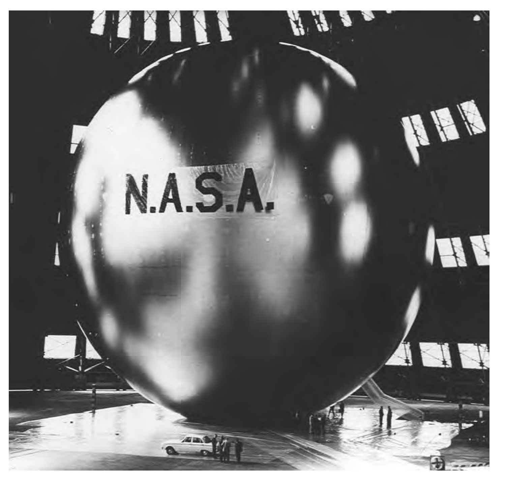
On 25 May 1961, President John F. Kennedy spoke to the nation, committing to an American Moon landing by the end of the decade. But in another, long forgotten, portion of that speech, the President also committed the country to build a global satellite communications network. To this end, NASA and the Hughes Aircraft Company began developing a small, experimental, geostationary satellite called Syncom. Its first launch in January 1963 went successfully, but unfortunately, the satellite failed to operate after injection into geostationary orbit. The second attempt in July 1963, though, was a complete success. These pioneering experiments soon paved the way for the semi-private, U.S. government subsidized Communications Satellite Corporation, COMSAT, that was formed as a result of the Communications Satellite Act of 1962 (a fallout from Kennedy’s commitment), to pave the way for the world’s first commercial communications satellite.3
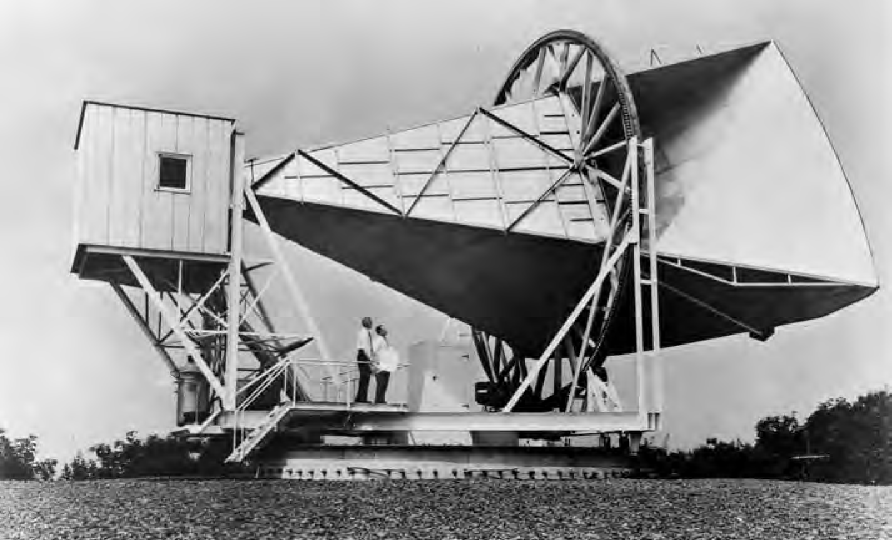
Not surprisingly, the United States was not the only country in the West interested in this new realm. Understanding full well the global nature of the endeavor, NASA began negotiations with the Europeans to build ground stations on their soil (negotiations which AT&T had begun two years earlier in preparation for its Telstar experiment). Soon, Earth stations existed in Great Britain, France, Germany, Italy, Brazil, and Japan. Further negotiations over the next two years eventually led to a new international organization, one which would ultimately assume ownership of the satellites and responsibility for management of the new commercial space communications network.
On 20 August 1964, INTELSAT (the International Telecommunications Satellite Consortium) was officially formed with America’s COMSAT as a majority owner. INTELSAT would eventually come to have more than 140 member nations, becoming the world’s largest commercial satellite communications service provider. In this cooperative, owners contribute in proportion to usage of satellite services and receive a return on their investment. On 6 April 1965, the consortium launched the Early Bird from Cape Canaveral, and the age of international satellite communications was born. Today, INTELSAT operates a fleet of more than 20 geostationary satellites, providing television, telephone, and data services to literally billions of people worldwide. To manage the system, the consortium establishes technical and operating standards for ground stations which all users must comply with. Using antennas as small as 1.5 feet in diameter, users such as television and telephone companies, along with data service providers around the world, can access the system on a 24/7 basis to support their customers.4
But back in the 1960s, much of the early use of the COMSAT/ INTELSAT system was to provide circuits for NASA’s communications network NASCOM, relaying data back and forth between ground stations and their respective control centers. By the end of the decade, fortuitous timing led to the INTELSAT-3 series completing the global network just days before a billion people watched on live television mankind’s first steps on the Moon on 20 July 1969.
During this time, communication satellites were fairly simple and not very big. Like Syncom, they were all spin-stabilized. In order to keep proper orientation in the weightlessness of space, an object (any object) has to be stabilized, either actively with an attitude control system consisting of small thrusters, or passively by spinning so as to conserve angular momentum (like how a bicycle wheel or a top stays upright when spun). By the 1970s, three-axis stabilization using gyroscopes had matured to the point where they could be used to reliably maintain the orientation of a satellite in orbit.5 This made a huge difference. Since a satellite would no longer have to be spinning, it could now accommodate large directional antennas to support high data rates and deploy very large solar arrays for power. With more power came more equipment, sophistication, and more capabilities.
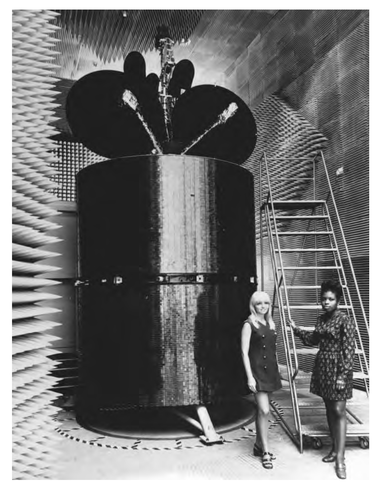
Technology steadily improved through the 1960s and 1970s. Perhaps an even more important improvement than new stabilization techniques was the increase in the amount of power that RF signals can be transmitted at and the utilization of higher frequencies in the RF spectrum. At the heart of signal amplification is a device called the Traveling Wave Tube, or TWT. Invented by Austrian born physicist Rudolf Kompfner and his colleagues at Bell Laboratories, the TWT amplifiers date back to the beginning of the space communications era. Early tubes had power output only in the one-watt range (less than a common household nightlight). By the early 1970s, though, TWTs with a couple hundred watt capabilities were becoming available. What this meant was that ground stations no longer needed large dish reflectors costing millions of dollars to build. Antennas for satellite services quickly and dramatically shrank to the point where a 3-meter (10-foot) dish costing around $30,000 could now do the job that once required a 26-meter (85-foot) dish.6 Advancements have continued in this field to where today, direct-broadcast application satellites have TWTs in the 300 watt range, requiring receive antennas that are only a foot or two (0.3 to 0.6 meters) in diameter and which cost less than a hundred dollars a piece. This has resulted in a huge leap in the amount and types of services available to everyday users literally anywhere in the world—as evidenced by the boom in the number of satellite television subscribers in recent years.
These sweeping strides in communications satellite technology provided NASA with the technology it needed to turn the TDRSS (Tracking and Data Relay Satellite System) from a concept on the drawing board into reality.7 In fact, it would not be an overstatement to call TDRSS a national resource, one that has totally transformed the way space communications are done. In its planning and conceptual stage for about 10 years, implementation of the TDRSS in the 1970s and 1980s was, without a doubt, the biggest evolution in NASA tracking and communications during that time. So different was TDRSS that, to put it simply, it made the sprawling network of global ground stations a thing of the past.
Of the many communication satellites launched prior to the Shuttle era, only one—ATS-6 on Apollo-Soyuz—played a key role for tracking and data acquisition on a human space mission. Its success in 1975 took place at an important juncture. By this time, the Agency had completed Apollo and had already conducted several years of feasibility studies on a space-based communications network. ATS-6 underscored the unique ability of a communication satellite to serve as an orbiting platform, greatly enlarging the field-of-view capable from a single location.
Thus, the timing seemed right to establish a completely new kind of network, one based in space. Cost-benefit analysis done by GSFC drove the point home. By the 1970s, the sheer number of American spacecraft requiring network support had exceeded 50 and the cost of running ground stations was rising. Moreover, the STDN, as a ground-based system, had inherent weaknesses. Each station, for example, could monitor only two spacecraft at the same time and all stations working together could only hold a spacecraft in view for a small percentage of each orbit. TDRSS changed all that. “The network will take on a whole different complexion, becoming primarily a satellite-to-satellite network. But the big advantage that we’ll get from that is the amount of coverage we’ll get. That’s the big benefit of TDRSS,” said Henry Iuliano in comparing the expected performance of the TDRSS to the STDN.
We have a very, very reliable network out there right now but it has wide gaps of information, compared to what we will get from TDRSS.There’s no comparison. During the aborted Apollo 13 lunar mission, voice contact was very important because you would have to wait sometimes 20 to 25 minutes between contacts. We had to fit as much communication as possible into that short span, whereas now, once the TDRSS system is fully deployed, we’ll have absolute coverage for a Shuttle mission.You can call and talk just about any time you want to.8
Its implementation greatly slashed the number of ground stations, saving NASA an estimated $500 million dollars in network operating expenses alone while providing this almost seamless communication capability.9
The original plan envisioned three satellites, each placed in geosynchronous orbit: one over the Eastern Hemisphere, one over the Western Hemisphere, and a spare positioned between the two. They would be connected to the ground at a single ground terminal. In this way, TDRSS could provide 100 percent viewing of spacecraft orbiting between 1,200 and 5,000 kilometers (745 and 3,100 miles) altitude. Craft orbiting above this altitude would be assigned to the DSN while for those orbiting below 1,200 kilometers, TDRSS could provide 85 percent coverage for—not perfect but still a far cry better than that offered by traditional ground stations.10
These hard facts were compelling and NASA’s commitment to TDRSS was firm by the mid-1970s. Originally intended for inauguration with the Space Shuttle in the 1979 to 1980 time frame, implementation of the new system experienced many frustrations, and unfortunately, a tragic setback as well. This series of events was to prevent the TDRSS from meeting its full potential for nearly the entire decade of the 80s. Even though by the late 1970s, when the Agency knew that the new Space Network (SN) was not going to happen for a few more years, there was nevertheless optimism on the part of planners that there would not be too much of a delay between the inception of Shuttle flights and when NASA would have an operational SN in place. Even as late as December 1979, Goddard was counting on TDRSS taking over all tracking and data support of near Earth-orbiting spacecraft by 1982.11
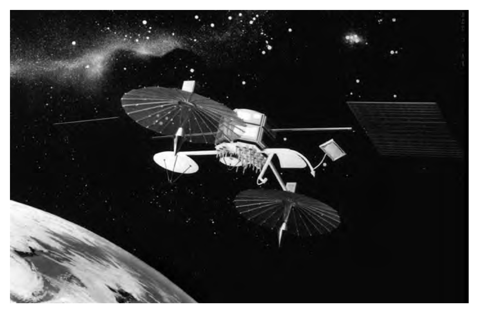
Though it took the better part of the decade to complete, by 1989 NASA finally had what it had been waiting for. With TDRSS now available, the size of the ground network indeed shrank dramatically while communications coverage grew, from some 15 percent to over 85 percent, a six-fold increase. On top of that, network complexity was greatly reduced. TDRSS does not perform processing of user traffic but rather, operates simply as a “bent-pipe” repeater, one in which signals and data between spacecraft and ground terminals are relayed but not processed in real time. One Goddard network manager prognosticated (correctly, as it turns out) in 1989 on the future of space communications on the eve of a fully operational TDRSS network.
We’re certainly not going to go out of business. We’ll start exchanging data through international programs, and there’ll be increased contact with the universities and foreign space programs. We’ll still maintain a NASCOM presence in Europe and Australia through the DSN and the domestic network is going to continue to grow in communications capabilities through the universities and scientific project control centers. As the tracking stations go away and the Shuttle flies on a regular basis, we’ll have more and more satellites and more and more scientific data to exchange, so we’ll be changing the network. Instead of linking up to tracking stations around the world, we’re linking up users to the data we’re getting back from the spacecraft, and that’s going to continue to grow.12
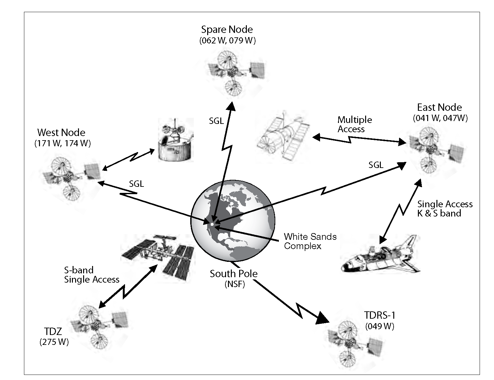
This is how the system works. Data, voice, and video acquired by the constellation of satellites are relayed to a centrally-located terminal on the grounds of NASA’s White Sands Test Facility in southern New Mexico— the White Sands Ground Terminal—or on Guam. From there, the raw data is sent directly by domestic communications satellites to control centers at the JSC, the GSFC or wherever it may be needed by independent users. In this way, nearly continuous communications with the ISS, for example, is allowed. This permits far greater flexibility in mission operations than had been previously achievable with a network of stations on the ground. To carry out the commercial side of the program, TDRSS also serves the space and science community at large by providing near-continuous coverage for over two dozen low-Earth orbiting spacecraft all at the same time. As one former manager put it, this new kind of space-centric network “focuses on the total data system, from instrument to scientist.”13
All this ties back to just how the TDRSS came about. Studies for a tracking and data system that would rely on satellites rather than on a network of ground stations date back to the early 1960s. It was the DOD, not NASA, who first planted the seed. In the interest of controlling the “high ground,” the United States Air Force knew that a space-based communications network could be the key. To this end, they held discussions with the Lockheed Missiles and Space Company and General Electric to investigate the feasibility of putting into space a so-called network of “Instrumentation Satellites.”
NASA, however, was not far behind. In 1964, tracking personnel at the GSFC requested that Headquarter’s OTDA consider funding an “orbiting tracking and data station” as a research and development project. OTDA managers in Washington were intrigued with the idea and put it on the agenda for Future Advanced Studies. Two years later in April 1966, the RCA Astro-Electronics Division and Lockheed were both awarded six-month contracts to define the characteristics of what was by then called an “Orbiting Data Relay Network.”
By fall of the following year, OTDA was convinced that the space-based concept had a future. Goddard was thus tasked to establish a Data Relay Satellite System (DRSS) Requirements and Interface Panel, which included specialists from human spaceflight and science applications offices from around NASA. This panel’s assignment was to oversee the definition and startup of such a system.14
The DRSS focused on a basic plan that called for a two satellite network in geosynchronous orbit over the Equator. In this configuration, an “East” satellite would be placed off the northeast coast of Brazil and a “West” satellite placed southwest of the Hawaiian islands. The goal was to have a system that could “be developed to augment and, to the extent practical, replace certain of the facilities that [comprised] NASA’s tracking and data acquisition network.”15 The Agency was hoping for an operational network in orbit in the 1974 to 1975 time frame. To do this, Goddard had to expend considerable effort designing a system that would meet user needs at a time when most of the users were not even around yet. In other words, how did NASA know that this system it was designing would meet the needs of a future user community for the next 15 years?
To answer these questions, network planners developed what was called “loading analysis” computer programs. These programs evaluated whether the designs would satisfy user demands and determined how changes to staffing and closure of ground stations would affect the existing users. Meetings were held to identify the needs, understand onboard recording capabilities, data dump requirements, antenna design, and orbit planning. For instance, it was through such analysis that Goddard came to understand that two so-called Single Access (SA) antennas and an array of 30 Multiple Access (MA) antennas could be used to satisfy those needs. (The number of spacecraft that can be supported by the MA system is determined by the phasing equipment on the ground, not by the number of antennas on the spacecraft.) From a station closure standpoint, loading analysis was used to help phase-down ground station shifts and closures in anticipation of each successful TDRS launch.
By May of 1971, Goddard was ready to issue Requests for Proposals to the industry for design of what was now officially called the Tracking and Data Relay Satellite System—TDRSS. An open competition led to Hughes Aircraft and North American Rockwell both being awarded two-year design contracts. However, before the contractors could finish their studies, NASA management realized that a budget conscious Congress would likely not fully fund development from the ground up of an effort that was still at a minimum four or five years down the road.
NASA had to think about new ways to procure TDRSS. In what could only be termed a radical departure from the way it had operated up until then—and in an effort to get the project started without committing the Agency to a future purchase of a suite of satellites—OTDA decided to lease rather than buy a satellite system. In other words, rather than proceeding with a government-owned and operated system, NASA would, in essence, negotiate with private industry for a long term contract, one that would have the latter sell communication services back to the government. Since TDRSS was categorized as a support program rather than an Agency research and development program, NASA considered leasing to be a viable option. Besides, all the technology required to implement the system was labeled as either off-the-shelf or in a high enough technology readiness level that leasing was considered no riskier than buying.16
In a flip-flop of the traditional customer-client relationship, the space agency was now a customer of private industry. Again, the impetus for this fundamental departure in the way NASA did business was rather simple and as usual, came down to economics. By obtaining this capability from industry on a long term, fixed price service basis, the Agency hoped to save money, and at the same time, spur on the commercial space sector.
In September 1973, Administrator James C. Fletcher wrote to individual members of Congress advising them of the Agency’s budget needs for FY 1975. Among the new programs listed was TDRSS. Regarding the crucial role that the new system will play in Space Transportation System (STS) (Shuttle) operations, he wrote:
Our studies have shown that the only way to meet our future tracking and data acquisition needs with reasonable expenditure of funds will be through a . . .TDRSS. Such a system will improve our Earth orbital tracking and data acquisition capabilities and meet the high data rates anticipated when the Space Shuttle is in operation, while at the same time, permitting the elimination of most of the ground stations in the present.17
Fletcher’s statement to Congress captured the main reason for TDRSS: it was cheaper than augmenting the ground stations to meet Shuttle requirements.
The Agency had already identified six companies that were interested in the project, but, in this case, needed the assistance of Congress to develop the necessary legislation to authorize NASA to enter into such a contractual arrangement, since something like this had never been done before. Congress debated the wisdom of such a relationship through the spring of 1974, but finally authorized the go-ahead in May.18
Looking back over the last 50 years, the transfusion of technology from the government-borne space program to the private sector has occurred in many areas. Nowhere has this been more visible than in the realm of communications. Even in 1977, Gerald Truszynski summed it up rather succinctly when he testified before Congress, saying “The TDRSS contract, we think, is a good example of government developments moving into commercial applications.”19
NASA now had the authority it needed to proceed with this leasing venture. It was at this time that the Agency’s Headquarters made the (fatalistic in hindsight) decision that NASA had no basis to preclude telecommunications companies from bidding. The fallout of this decision was that by October 1974, no less than 27 companies or teams of companies had indicated their interest in bidding for the design, fabrication and operation of TDRSS. On 7 February 1975, Goddard issued a Request for Proposals for Phase I studies which would detail the system design and cost. In June, awards went to two contractor teams: RCA Global Communications, Inc., and Western Union Space Communications, Inc. A separate contract was awarded to Hughes Aircraft to define the user antennas systems that would be required by customer satellites.20
By 15 January 1976, Western Union and RCA had completed their six-month Phase I studies. Both were now intensely competing for the Phase II production contract, the winner of which would actually build and operate the system. These two were not the only ones busy. Throughout the year, announcements came of awards for several smaller, support contracts. One was given to Hughes, as expected, for the company to continue on the user (customer) antenna system. Others were awarded for building various support hardware. The big announcement for the TDRSS prime contract itself did not come, however, until the end of the year.
On 12 December 1976, in what could only be called a shock to the aerospace industry, NASA awarded the lucrative, 10 year, $800 million prime contract to Western Union Space Communications, Inc., otherwise known as Spacecom—a wholly owned subsidiary of the Western Union Corporation headquartered in Upper Saddle River, New Jersey. It ranked among the largest contracts ever awarded by the Agency, even dating back to the big procurement days of Apollo. Western Union, while a leading communication services provider (it continues to be one of the largest wire service companies in the world), had virtually no experience in the aerospace world.
Under the Western Union team, TRW’s Defense and Space Systems Group in Redondo Beach, California would build the satellites and provide the computers and software for the ground terminal at White Sands. Unlike its prime, TRW was a leading satellite manufacturer for the DOD and NASA, and thus provided the valuable experience of working on large aerospace projects that Western Union so sorely lacked. In addition to TRW, the Harris Corporation’s Government Communications Systems Division in Melbourne, Florida, was on the team. Harris, a leader in communications and information technology, was responsible for $60 million of the contract to build and integrate the system’s antennas at the White Sands terminal.21
After the network was up and running, terms of the contract called for 10 years of services to be provided by Western Union Spacecom to NASA in both the space and ground segments. This included six spacecraft with components for a seventh. But here is where the contract was different. Unlike traditional procurements where the government provided funding from the onset, no money would be forthcoming to Western Union until the system was operational. Since no funds would be forthcoming from NASA until TDRSS became operational, the development of the project was financed with loans provided to Western Union by the Federal Financing Bank, an arm of the U.S. Treasury. To make this work, Congress had to actually pass a law, which they did on 30 July 1977. Under the terms of Public Law 95-76, NASA would make loan repayments to the bank once services began.22
Unfortunately, and almost from the beginning, the contract with Western Union ran into problems. While large, government procurements on this scale are already difficult enough to handle, the TDRSS procurement had an added level of complexity. More specifically, the space agency was trying (for the first time) to build what was known as a “shared system.” What this meant was that TDRSS would actually serve two purposes: It would be designed and built to provide NASA with a new communications network, but it would also be designed and built to provide commercial communications. Part of this venture called for one satellite to be dedicated exclusively for use by Western Union to provide domestic communication services once the constellation was complete.
This sharing of the system introduced some technical complications into the system. But that was not the main problem. What really became an issue to NASA was that Western Union was unable to market the commercial part of it. Bob Spearing, NASA’s Director of Space Communications who was at Goddard during this time, explained what happened:
In a sense, they [Western Union] were ahead of their time. They were designing a commercial satellite package that worked at Ku-band. Ku-band was not a household word at the time. It was a new emerging capability and they just weren’t able to get traction. So that created some difficulties in terms of how they were going to proceed with NASA.The idea of the shared system was that it costs less because the satellite would serve two purposes.When that started to go down the drain, there were a lot of contractual issues that transpired with NASA to try and resolve that problem leading eventually to NASA actually buying out the commercial side of the system.
By buying out the system, the Agency in essence changed TDRSS from a shared system back to one that was basically dedicated for NASA use. However, the commercial capability remained on the satellites. As Spearing said, “The design was far enough along at that point that it would have been much more costly to scrap the design and start over, so we actually built the satellites with the commercial capability.”23
In 1980, in the first of a succession of moves, the TDRSS operations contract was transferred to a partnership of Western Union, Fairchild and Continental Telephone. Then three years later, in July 1983, Western Union got out of the contract all together by selling its 50 percent of the business to the other two partners. The buyout continued. In 1985, Fairchild, sold its share, leaving Continental Telecom—better known as Contel—as the sole owner of Spacecom and the TDRSS contract. This continued until 1990 when a new contract was negotiated which finally transferred ownership of the system back to NASA. Contel remained onboard but was now the space agency’s contractor that operated the system for NASA.24
The failure of Western Union in their role as the TDRSS prime contractor can be traced in large part to the nature of the company itself. Unlike its subcontractors, TRW and Harris, Western Union was not a major player in the aerospace industry. As such, it operated in the highly regulated environment of the telecommunications industry where it was not unusual to find four lawyers and managers for every engineer. As a communication services provider, it knew how to get the most out of a network. However, it lacked the experience to actually build one. From a technical standpoint, the concurrent development of the TDRSS with the Space Shuttle in the late 1970s also meant that Western Union had to work closely with Rockwell (the Orbiter prime contractor) as well as the JSC. This was again something that the company did not do successfully. Western Union’s function on the contract thus became more and more administrative than technical, even to the point where TRW ended up assuming most of the systems engineering and integration role.
Former Associate Administrator for the Office of Space Operations Robert O. Aller presented to senior Agency management and Congress in 1989 a “lessons learned” workshop from the TDRSS procurement process. Aller gathered 30 NASA and industry people who were closely involved in the process to review its successes and its problems. The eight lessons learned concisely addressed the heart of the matter:
- Shared Service Concept. The concept of combining a commercialneed with an established NASA need is valid, and may offer significant savings to the government through shared costs;however, the rights and operational utilization needs, availability, and privileges of each party must be clearly established in advance.
- Leased-Service Concept. A leased-service concept should be based on the use of available commercial services or existing system technology if service is mission-critical.
- Interdependency with Government-Provided Services. The interdependency of government-provided services to the establishment of a shared-lease service should be avoided or minimized to avoid government impact to the enabling of the leased services.
- Fixed-Price Contract for Developmental Work. A fixed-price contract is not appropriate for development of a mission-critical support system where significant technology development may be required or where substantial changes to requirements may occur.
- Government Control Under Leased Service. Under a leased-service arrangement, NASA must accept some loss of control over physical assets and accept risks of system outages or failures.
- Operational Interface. In a fixed-price environment, establish the government/contractor operational interface at a point where changes in requirements affect only the government side, so far as possible.
- End-to-End Engineering and Operations Analysis. In a leased-service approach to obtaining a mission support capability, it is just as essential initially to establish a comprehensive end-toend systems engineering analysis and an operations and testing plan as would be done in a conventional NASA space system development program.
- Considerations for Prime Contractor. The prime contractor must be one who has an extensive background in the business at hand.25
Spearing elaborated on these lessons and what happened:
In a sense, it was like NASA does today. In other words, if NASA lets a contract today, we would be in that oversight and management role and we would have a group of contractors handling the various elements, usually one lead contractor with some subcontractors associated with it.So we had this extra layer in there, if you will, with Western Union, driven principally by this shared system concept.26
Despite these challenges, work on TDRSS pressed on. Entering its final year of development in 1979, hardware fabrication continued in both the space and ground segments.27 In the space segment, manufacturing of the high precision spacecraft antennas was the main item. Other activities included finishing up work on the propulsion system, specifically, qualification testing of the propellant tanks and acceptance testing of the Reaction Control System (RCS) that will be used to maneuver the satellites. In the ground segment, the Operations Building and ground antenna installation at the White Sands Ground Terminal (WSGT) were completed while hardware checkout and software development continued.28
Since nothing like TDRSS had been built before, technical challenges were expected. They were essentially the kind of things expected with building a brand new system, both in the design, and in particular, with the software. One way to describe the nature of a networked system involving many components such as the TDRSS is that it is “tightly coupled.” This means that the software is such that if there is an anomaly in one part, it is going to affect a lot of other parts of the system. Along these lines, TDRSS was not only a tightly coupled system but an integrated system as well, with many subsystems that all had to work together. As a forerunner to today’s so-called lights-out operation, TDRSS was envisioned by its designers to be capable of around-the-clock, unattended automatic operations.
For example, an operating schedule could be uploaded to a TDRS spacecraft. From there, it was up to the software to control the system, both on the ground and aboard the spacecraft—to configure links and acquire a given user satellite at the appropriate times. This was not at all trivial considering that each TDRS might be accessing 20 satellites at the same time, each in their own orbit while entering and exiting the spacecraft’s field-of-view. With scheduling now automated, the number of ground controllers and the operational cost could be greatly reduced, to the point where personnel were needed only to monitor the system and implement changes. This move to systems automation was a major intent of the TDRSS. Thus for TDRSS to work, the software simply had to work.
Eventually, TRW engineers, working with Goddard, ironed out the problems. To demonstrate its capability, Spearing recalled that
One day, just to show off a little bit, when we got it working, we had the operations team actually get up from their consoles and walk out of the room. We actually watched from a monitor to see how the system did. It went right through the whole process, acquired the spacecraft, got the signal and the data flowed out the back door.We wouldn’t do that normally—just sort of a little showoff thing that we did for the local folks.We were not tracking the satellite operationally, just using it as a target of opportunity.29
But it proved the point: TDRSS was ready.
Another key hurdle that had to be cleared by the Agency as the initial operating capability of TDRSS approached was to make sure that there was not going to be radio frequency interference with other transmissions. A FCC Electromagnetic Compatibility Analysis was done in Annapolis to make sure that NASA’s new system would “operate on a not-to-interfere basis with other services” operating in the 13.25 to 15.35-GHz regime.30 At the heart of this analysis were classified DOD assets that operated in the same frequency range.
With the FCC analysis showing no serious radio frequency conflicts—and with the planned initial operating capability of the Space Shuttle quickly approaching—GSFC, that same year, made some rather significant decisions. The most important of these had to do with how the new satellites were going to be launched. Instead of sticking with the original decision to use a combination of expendable launch vehicles like the Atlas/Centaur and the reusable Shuttle, it tied TDRS launches exclusively to the latter. To do this, the spacecraft would be mounted atop an Inertial Upper Stage (IUS) rocket and the whole stack loaded horizontally inside the Shuttle payload bay. Once in Earth orbit, the TDRS/IUS stack would be raised up and gently deployed (literally pushed away) from the Orbiter. After it had moved a safe distance, the IUS would be ignited placing the TDRS on a course to geosynchronous orbit. The launch mode was officially tied to cost but ostensibly made the Shuttle that much more indispensable as it would now be the TDRS’s only ticket into space. NASA, in essence, became a key supplier to its own satellite contractor. It was a watershed decision, one that would end up directly affecting the fate of TDRSS for years to come.
Other modifications had more to do with the capabilities of the satellite itself. Provisions for increasing spacecraft weight, reliability and station-keeping fuel reserves were added. Its tolerance in high radio frequency interference environments up in geosynchronous orbit was improved. (A Spacecom analysis done the year before had indicated that pulsed interference signals emanating from ground radar systems could create substantial TDRSS system upsets.) Overall, the value of these modifications added about $80 million to the project, which brought the total value to $866 million, plus award fees. When it became apparent that the Shuttle was not going to fly until after 1980, NASA slipped the schedule and delayed the launch of TDRS1 until December 1980. As it turned out, it would not fly until 1983.31
From 1983 to 1995, NASA launched seven (TDRS-1 through 7) first generation TDRSS satellites. At the time, they were the largest and most advanced communication satellites ever made, weighing 2,270 kilograms (5,000 pounds) each and measuring 17.4 meters (57 feet) from one end of the solar panels to the other (equivalent to the height of a five-story building). In fact, the spacecraft was so large it would collapse under its own weight and could only be opened in the weightlessness of space.32 Physical attributes aside, the heart of the spacecraft is its data handling capability. Operating in the S- and Ku-band, each satellite’s electronic relay system could handle up to 300 million bits of information per second (300 Mbps), unheard of at the time considering 150 Mbps was considered high-rate service. Since eight bits of data make one digital word, this capability was somewhat akin to processing three and a half, 20-volume sets of encyclopedias every second.33
Looking somewhat like a giant, robotic bird out of a science fiction novel, the TDRSS spacecraft had several distinguishing, easily recognizable features. Foremost among them were the two huge, wing-like solar arrays which provided the satellite with over 1,800-watts of electrical power. The total array consisted of six (three on each side) 3.8 by 1.3-meter (12.6 by 4.2-foot) panels weighing approximately 130 kilograms (288 pounds) with a total photo-cell area of 30 square meters (317 square feet). These wings were movable so they could be kept pointed to the Sun. To do this, the arrays rotated about a common axis by two identical electro-mechanical drive assemblies which were individually controlled (Sun oriented) by the onboard Attitude Control System (ACS).34
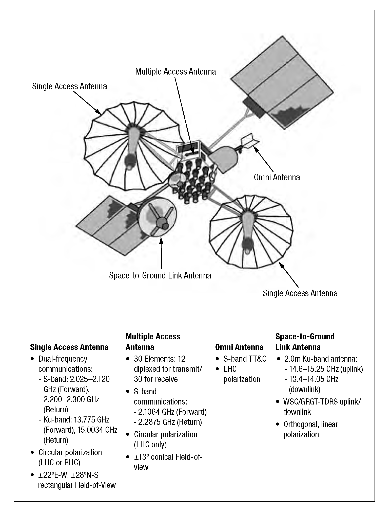
Solar energy converted by the photo-voltaic cells was then used to charge the onboard nickel-cadmium (NiCd) batteries. These were capable of producing a power output of 1,440 watts and were housed in the hexagonal equipment module of the main body of the spacecraft. Since electricity was a precious commodity (true of any spacecraft), TDRS battery usage was carefully monitored and controlled via the ground at White Sands. To maintain spacecraft weight symmetry, these batteries were configured in two assemblies, each comprised of 36 sealed NiCd cells. With each assembly weighing 66 kilograms (145 pounds), they were quite heavy, but had good electrical capacity at 40 amp-hours each, about that of an automobile battery.35
To show just how far technology had come over the years, the 10 milliwatt mercury battery that powered the transmitter on the old Vanguard satellite was designed to last 10 to 14 days. Since the TDRS batteries were not self-contained but rechargeable via solar power, their design life was 10 years minimum. Since the spacecraft had four major power busses, electricity was routed from the solar arrays and batteries to the spacecraft systems using an onboard Power Control Unit (PCU). As its name implied, the PCU controlled the charge and discharge rates of the batteries.
All active space vehicles require some type of ACS, or Attitude Control System—unless the spacecraft is purely passive like the Echo. On the TDRS, the onboard ACS contained all the equipment necessary to control its orientation and stabilization. In addition, it served to point the antennas, drove the solar arrays and controlled thruster firings for precise, three-axis station keeping. Like most modern control systems, the ACS used a combination of miniature momentum wheels, gyroscopes, and accelerometers to precisely measure its inertial attitude and position in space (exactly how it was oriented with respect to the stars and the horizon). An important capability that the ACS provided was to recover the satellite should there be a loss in attitude control—for example, a spin from a highly unlikely, nondestructive impact with space debris.36
Since the spacecraft was designed to stay in orbit for at least 10 years, it carried its own fuel to provided impulses for maneuvering and precision station keeping. Onboard were 680 kilograms (1,500 pounds) of hydrazine propellant, enough to operate the spacecraft for 10 years.37 Like electrical power, the propellant budget was also carefully monitored on the ground. Rounding out the ACS was a solar sail which compensated for the effects of solar wind against the asymmetrical body shape of the satellite.
In addition to power and propulsion, a critical requirement for any spacecraft is the thermal protection needed for it to survive the extreme temperatures of space. On the surface of Earth, we are protected by the atmosphere so that temperature changes are relatively gradual. But outside the atmosphere, temperatures can swing by more than 280°C (500°F) during each orbit. When TDRS was in daylight, the temperature could reach 117°C (243°F); when it was on the night side, the temperature dropped to -173°C (-279°F). This is why spacecraft are often seen wrapped in gold thermal protection blankets. TDRS’s Thermal Control System (TCS) maintained its temperature within acceptable limits during all prelaunch, launch, orbit insertion, and on-orbit activities for the duration of its mission. To control the temperature, the TCS used a combination of insulation blankets, radiator panels, thermostatically controlled heaters, and special reflective surface coatings. For example, radiators were located on the upper and lower faces of the equipment compartment to help reduce solar heating effects. Components with nonradiating external surfaces were covered by aluminized Mylar or Kapton insulation blankets which were electrically grounded together to the main spacecraft structure so as to prevent any on-orbit static charge build up.38
Along with the solar arrays, the antennas of the spacecraft were undoubtedly its most prominent features. In fact, TDRS carried five antennas. Particularly noticeable were the two 4.9-meter (16-foot) diameter, high-gain parabolic antennas which resemble giant parasols after unfurling. These were the so-called Single Access (SA) antennas, providing dual frequency communications at both the S-band (2.025 to 2.300 GHz) and Ku-band (13.775 to 15.0034 GHz). They were called SA because they tracked and relayed communications only with a single user spacecraft at any one time, in response to ground commands. The two SA antennas were steerable in two-axes and could be slewed for this purpose, following an object as it moved below, crossing TDRS’s field-of-view.39
The high-rate service provided by these antennas was available to different satellite users who wanted to use the TDRSS on a time-shared basis. While the antenna may only be pointed at a single position, it was capable of supporting two users if they were operating at the different S- and Ku- Band frequencies. In other words, with the SA antennas capable of handling dual frequencies, each could actually be used to support two user satellites at the same time—one on S-band and one on Ku-band—if both were within the antenna’s field-of-view. To keep design complexity at a minimum and to reduce circuit cable loss (that is, loss of radio signal strength as it travels through a finite length of wiring), the SA receivers and transmitters were actually mounted on the back of these large antennas.
Since every pound that is launched into space drives up the cost, materials are usually selected with as high a strength-to-weight ratio as possible, and as durable as possible; exotic manufacturing techniques are thus not uncommon. This was particularly true with something as big as the SA antennas. In this case, the primary reflector surface was made of a molybdenum wire mesh, woven like cloth, on the same type of machine used to make material for women’s hosiery. For RF reflectivity and thermal tolerance, it was clad in 14-carat gold. When unfurled, its 18.9 square meters (203 square feet) of mesh was stretched tightly on 16 high-strength tubular ribs by fine, threadlike quartz cords. In this way, the antenna looked somewhat like a large, glittering, metallic spiderweb. Despite the size, the entire antenna structure weighed only about 23 kilograms (50 pounds) on Earth. To help explain their lightweight sophistication, NASA liked to publicize the following fact: Because of the support and structure that would be needed to counterbalance the effect of gravity, an antenna of similar capability and size based on Earth would need to weigh about 2,270 kilograms (5,000 pounds).40
Mounted on the lower side of the spacecraft’s main body was the MA antenna. It was an electronically steerable, 30-element, phased-array antenna used to relay communications for multiple customer satellites simultaneously. To relay signals, 12 of the elements—called helices—were diplexed (split) for transmit and receive while all 20 were used as receive elements. Signals from each helix antenna were received at the same frequency, multiplexed or combined into a single composite signal and transmitted to the ground. In the ground equipment, the combined signal was demultiplexed and distributed to 20 sets of beam-forming equipment that discriminate among the 30 signals to extract signals of individual users. So a TDRS functioned somewhat like a celestial switchboard, receiving data from up to 20 different satellites while transmitting to 12, all at the same time. (The 12 that it was transmitting to could be other satellites or be the same ones from which it was receiving data.)41
From its vantage point at geosynchronous altitude, the 13º field-of-view of the MA meant it could see all spacecraft in orbits of 1000 km (620 miles) or below—the majority of low-Earth orbit spacecraft. Not only could it track all spacecraft below this altitude, it could also track many aircraft simultaneously. The MA service was attractive because it was very reliable, and for TT&C and low science data rate functions, it could provide user support everywhere and at any time. By contrast, the SA service was attractive because it could handle high data rates (300 kbps for S-band or 25 Mbps for Ku-band SA forward service versus only 10 kbps for MA service). Another difference was that the MA antenna operated only in the S-band. More specifically, it forwarded signals at 2106.4 MHz and received return signals at 2287.5 MHz.42 When the system was being designed in the 1970s, this S-band only capability was deemed sufficient by most communications experts for handling the commercial satellite traffic then envisioned for the coming decade. This is only partially true now 35 years later.
While the Single and Multiple Access antennas were fine for communicating, tracking, and relaying data between the TDRS and other satellites, they could not be used to actually link the spacecraft with the ground. This was done with a separate Space-to-Ground Link antenna, or the SGL. It was a pointable, 2-meter (6.6-foot) diameter dish whose only purpose was to provide the uplink and downlink between the TDRS and the ground terminals at Whites Sands and Guam. Signals were relayed with the SGL using the more bandwidth efficient Ku-band (13.4 to 15.25 GHz). The SGL antenna, unassuming in appearance compared to the pair of SA antennas, handled all customer scheduling and service requests as well as NASA’s own TDRSS command and telemetry. It was, in essence, the customers’ only electronic link back to Earth.
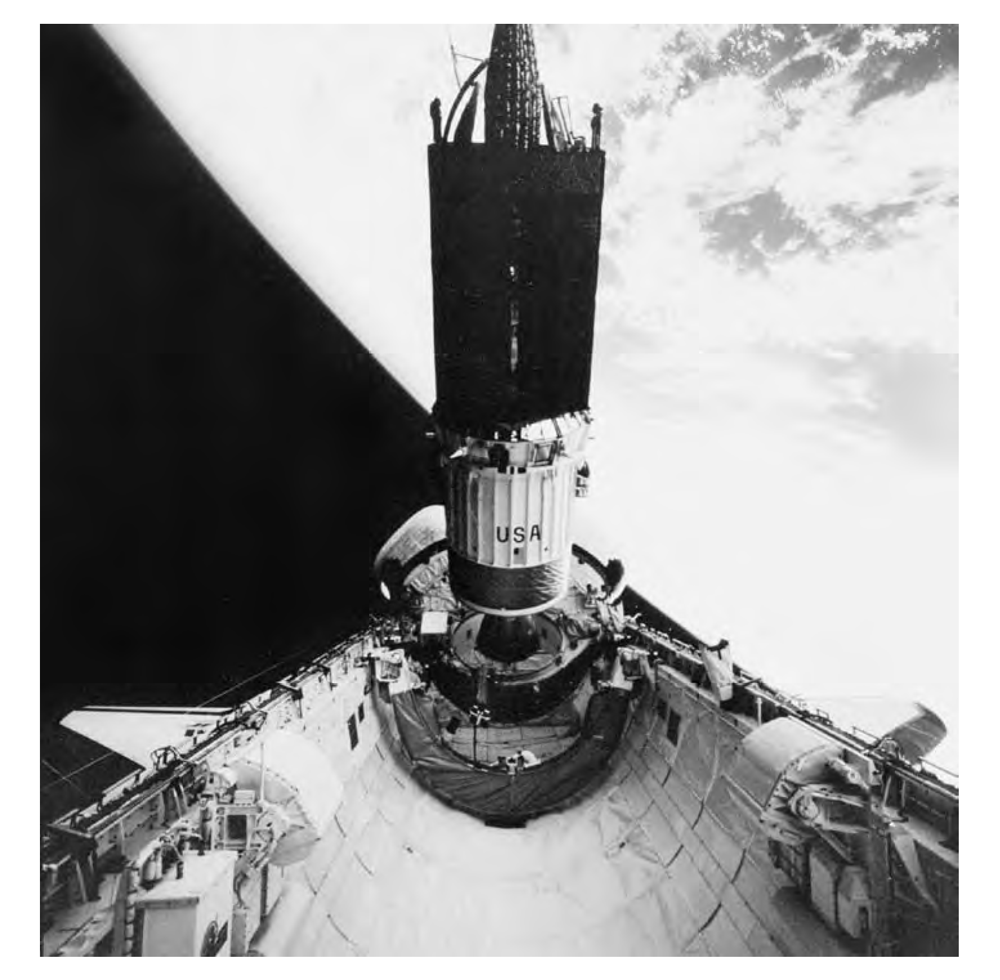
Finally, there was the Omni Antenna which supported the spacecraft’s TT&C system. The TT&C collected data from the various onboard subsystems and transmitted the telemetry down to White Sands so that the spacecraft’s health and status could be ascertained (for example, how fast were the batteries discharging). Conversely, it processed and implemented commands uplinked from the ground (for example, initiate thruster firings to rotate the craft). The TT&C system provided range and range rate information by computing precise turnaround-and-retransmission delays in signals to-andfrom the ground.
Once the TDRS was operational in orbit, TT&C was normally done at Ku-band through the SGL antenna. However, there were exceptions and that was where the Omni came in. Looking rather inconspicuous—an oddly-shaped polygon—this omni-directional antenna mounted on the side of the main structural body operated in the S-band and was used strictly by NASA for command and control. Specifically, it was used during deployment from the Shuttle and, if necessary, during system recovery in the event of an emergency. It supported no customer services. With the Omni, TDRSS control on the ground could switch satellite operations to failsafe mode at any time for a variety of reasons: prevention of command lockout caused by failure of the primary SGL equipment, anomalous spacecraft attitude or pointing errors, and something that NASA hoped never happens—remote (hostile) takeover of the spacecraft. To put it simply, if one thinks of the SGL as the spacecraft’s normal link back to Earth, then the Omni was, for all intents and purposes, the spacecraft’s last-chance lifeline.43
When STS-6 left Pad 39A at the KSC on the afternoon of 4 April 1983, it had a few firsts. It was the first flight of the new Shuttle Challenger. It was the first use of the improved, lightweight External Tank and the lightweight SRB casings. The mission had the first spacewalk (EVA) of the Shuttle program, one that lasted 4 hours and 17 minutes to check out the new generation of spacesuits that will be used by Shuttle astronauts. And finally, it launched the first Tracking and Data Relay Satellite, TDRS-1.
The launch, originally slated for 20 January 1983, was delayed several times due to leaks discovered in Challenger’s main engine fuel lines while it was on the pad. But in an unfortunate turn of events, as engine repairs were being made, a severe rain storm swept through the Cape that caused TDRS-1 to be contaminated while it was still in the Payload Changeout Room (PCR) at the pad. As a result, workers had to take it back to its checkout facility, have it cleaned, rechecked and remounted into the Shuttle payload bay. (The PCR and the payload bay first had to be cleaned out also.) With this temporary roadblock cleared, STS-6, commanded by Skylab veteran Paul Weitz, lifted off without further delay at 1:30 pm. EST on 4 April, sending the crew of four on their five-day mission to deploy the first TDRS.44
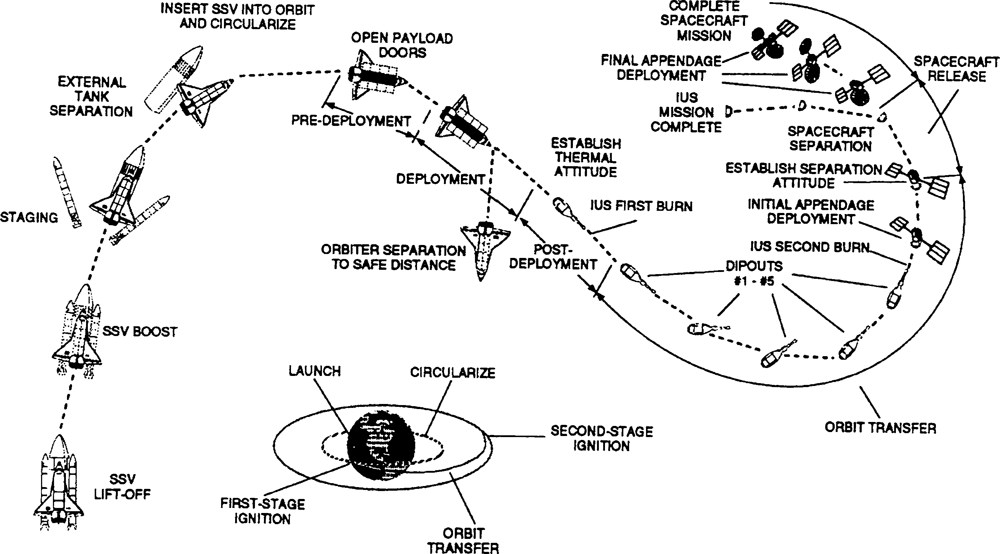
Deployment of a TDRS from the Space Shuttle is a well orchestrated series of events. After reaching orbit, the Shuttle’s payload bay doors are opened and its Ku-band antenna deployed. This antenna—stowed on the right, forward side of the payload bay—was crucial for checking out and communicating with the new satellite. As efficient a bandwidth as Ku-band is, one drawback of having to operate in this high frequency is the inherently narrow pencil-like beam needed to focus the signals.45 This makes it somewhat difficult for the SGL antenna to lock onto the signal in order to communicate with the Shuttle. However, since an S-band system can get by with an inherently larger beam, the Omni antenna is first used to lock the Ku-band antenna into position after the satellite is deployed from the Shuttle—a process known as acquisition. For anyone who has ever looked for an object in the night sky using a telescope, this is not unlike having to first use a finder-scope to point the main telescope in the vicinity of the star.
Once the Omni has locked on, the Ku-band system is turned on. To perform the acquisition, the Shuttle’s Ku-band antenna is gimbaled so it can acquire the TDRS by executing a preprogrammed search. In this search, if the satellite’s SGL signal is not detected within the first 8° of a scan, the search automatically expands to 20° and is repeated. The entire search typically takes only about three minutes. The scanning stops once the acquired signal strength meets a given threshold. At that point, the Ku-band system becomes operational.46
About an hour after release, having moved sufficiently far from the Shuttle, the IUS first-stage rocket motor is ignited. Built by Boeing Aerospace for the U.S. Air Force, the two-stage IUS solid-rocket boosts the TDRS into its 35,900 kilometer (22,300 mile) geosynchronous orbit since the Shuttle itself cannot go that high. This is then followed by a second-stage motor burn. Once this burn is successfully completed, the TDRS—still attached to the IUS—is well on its way to geosynchronous orbit and the Shuttle and her crew have essentially done their job.
There is, however, still more to do, this time by the ground. First, there is the geosynchronous insertion burn to circularize the spacecraft’s orbit at geosynchronous altitude. This is followed by separation of the satellite from the now spent IUS. At this point, the TDRSS team at White Sands commands deployment of the solar arrays. The two 4.9-meter (16-foot) diameter SA antennas are then unfurled and pointed toward Earth for the spacecraft to begin its checkout. This testing will take place over the next three to five months. During this time, the ground will also command small thruster firings to slowly move the craft and position it at its desired operating location.
Joining Weitz on this mission were Pilot Karol J. Bobko and Mission Specialists Donald H. Peterson and F. Story Musgrave, both of whom would deploy the satellite from controls inside the aft flight deck. After Challenger was successfully inserted into a 286-kilometer (178-mile) circular orbit, the payload bay doors were opened and the TDRS-1/IUS stack was raised. Ten hours after launch Peterson flipped the switches which allowed the giant satellite to be released and gently pushed away from the Shuttle. The first engine burn went perfectly. However, the second did not; the motor shutdown prematurely.
For almost three hours, America’s first TDRS appeared to be lost, deaf to all commands. At 9 a.m. EST the following morning—as Goddard engineers were busy with contingency procedures—the Goldstone tracking station received a faint indication that it had indeed separated from the spent IUS. However, its orbit was far from what was needed. Instead of a nice, circular 35,900 kilometer orbit, the incomplete engine burn had stranded TDRS-1 in a useless 35,325 by 21,790-kilometer (21,950 by 13,540- mile), elliptical orbit. Furthermore, instead of zero inclination (orbit parallel to the Equator), it was crossing the Equator at an angle of 2.4º. As if that was not enough, the spacecraft was spinning out of control at an alarming rate of 30 revolutions per minute, or once every two seconds.
From the ground, the situation looked bleak. There was hope, however: Use the onboard ACS (designed only for station keeping maneuvers and for adjusting the satellite’s location) to actually finish boosting it into geosynchronous orbit. Over the next two months, engineers at Goddard, TRW and Contel worked out a series of burns using the small (one pound thrust) ACS thrusters to carefully nudge the spacecraft into the proper orbit. Since the thrusters are so small, this orbit transfer could not be done with one maneuver. It, in fact, took 39 separate commands and consumed some 400 kilograms (900 pounds) of the usable 635 kilograms (1,400 pounds) of fuel onboard TDRS-1. The maneuvers began on 6 June 1983 and took a total of three weeks. During this time, overheating caused the total loss of one of the two sets of 12 thrusters plus one thruster from the other set.
But the patience paid off. On 29 June 1983, TDRS-1 reached its destination, parking itself over the Equator in a “figure-8” loop at 41° west longitude, just off the northeast coast of Brazil. There was much to celebrate at Goddard. As one flight controller put it, “It was a cliff hanger.”47
A week later, TDRS-1 was turned on for testing. All went well until October when the spacecraft began to be plagued by a series of component failures. First, one of the Ku-band SA diplexers used to combine RF signals failed. Shortly thereafter, one of the Ku-band TWT amplifiers on the same antenna failed crippling the forward link relay service that it could provide. The failures continued. On 19 November 1983, one of the two TWT amplifiers serving the other SA antenna also failed. This meant that TDRS-1 had lost one of its primary capabilities, the Single Access, Ku-band, forward link relay.
One of the consequences of losing this link was that it prohibited the use of the Text And Graphics System (TAGS) onboard the Shuttle. TAGS was a high-resolution facsimile system that scanned text or graphics and converted the analog scan into a digital bit-stream. Basically, a fancy fax machine that operated via telemetry, it provided an on-orbit capability to transmit text, maps, high resolution schematics and photographs between the astronauts and Houston. In lieu of TAGS, Mission Control—not until 1989 as it turned out—had to resort to using the old S-band, Apollo-era teletype system to relay text-only instructions up to the crew (for example, procedures, weather, crew activity plan changes, etc.).48
Despite these annoying setbacks, Goddard continued testing over the next 12 months. The fact that the craft had lost a major link capability notwithstanding, NASA declared TDRS-1 operational in December 1984, saying “Working solo, TDRS-1 provided more communication coverage . . . than the entire network of NASA tracking stations had provided in all previous Shuttle missions.”49
It had been a long 20 months since TDRS-1 left Pad 39A. The ensuing years have born witness to this declaration. Besides
serving as one of the two primary satellites in the early Space Network, TDRS-1, over the years, accumulated a number of firsts to its credit. It was the first satellite used to support KSC launches in the early 1990s, returning real-time telemetry and video. It also helped close the Zone of Exclusion over the Indian Ocean (explained later in the chapter), providing 100 percent coverage for the ISS, the Space Shuttle and low Earth orbit satellites. In March 1992, Goddard called on TDRS-1 to quickly aid its Compton Gamma Ray Observatory (CGRO) when data recorders onboard the spacecraft failed.
Since the satellite was precessing (that is, changing its orbital inclination or tilt with respect to the Equator) in its orbit almost 1º per year since its deployment, it was used serendipitously in ways never expected. Due to its changing orbit, TDRS-1 was the first satellite able to connect both Poles. In cooperation with the National Science Foundation (NSF), NASA put a ground station for TDRS-1 in January of 1998 at the exact location of the (true) South Pole. The terminal has since given scientists at the Amundsen- Scott Base in Antarctica the year-round ability to return high volumes of science data to the continental United States. With it, the first connection to the Internet—and the first live Web cast—from the North Pole was done as was the first Pole-to-Pole telephone call connecting the North Pole to the South Pole. The event was even recorded in ‘Ripley’s Believe It Or Not’ and the Guinness World Records in April 1999.50
NASA considered retiring the aging satellite in 1998, but instead allowed the NSF and others to use it for scientific, humanitarian and educational purposes. For example, TDRS-1 was used in 1998 for a medical emergency at McMurdo Station in Antarctica. Its high-speed connectivity allowed scientists to conduct a telemedicine conference, allowing doctors in the U.S. to teleconference a welder through an operation on a woman diagnosed with breast cancer.
A second working satellite placed into orbit in January 1986 would have meant an operational TDRSS and attendant closure of most ground stations shortly thereafter. Those plans were, however, suddenly dashed when the Space Shuttle Challenger met with a horrific demise 73 seconds into its mission on 28 January 1986 (STS-51L). At 11:38 EST that morning, it was launched atop Pad 39B at the KSC in the 36°F chill of the south Florida winter, the coldest ever for a Shuttle mission. The mission was the most publicized NASA flight since Sally K. Ride became the first American woman in space on STS7 two and a half years earlier. Challenger’s crew of seven was commanded by Shuttle veteran Francis R. “Dick” Scobee; joining him were Pilot Michael J. Smith; Mission Specialists Ellison S. Onizuka, Judith A. Resnik, and Ronald E. McNair; and Payload Specialists S. Christa McAuliffe, a high school social studies teacher from Concord, New Hampshire and Gregory B. Jarvis, an engineer with TRW. The primary mission of the planned week-long flight was to deploy and checkout TDRS-2. However, the fact that McAuliffe was going into space garnered the flight more national attention than usual from the media, much more so than on any of the previous 17 missions since STS-7.
From liftoff until telemetry was lost, no flight controller observed any indication of a problem, although post-flight analysis showed telemetry had uncovered some anomalies regarding pressures inside the starboard SRB motor shortly after liftoff. The last voice transmission was received via Ponce de Leon as Scobee acknowledged a routine main engine throttle up call from the Capcom with simply a “Roger, go at throttle up.” Three seconds later, a horrified crowd—including many in the crewmembers’ families and students who had made the trip from New Hampshire to cheer on McAuliffe— watched, stunned, as Challenger erupted into a giant ball of flames.
Many unfamiliar with the Space Shuttle at first thought this was the routine separation of the SRBs. However, the onlookers soon realized that something was happening that was anything but routine when they saw the SRBs emerging from the cloud without any sign of Challenger. The crew apparently had no indication of any problems before the Orbiter rapidly broke apart.51 No alarms ever sounded on the flight deck. The first evidence of the accident came from live video coverage on the ground and when radars at the Cape began picking up multiple objects.
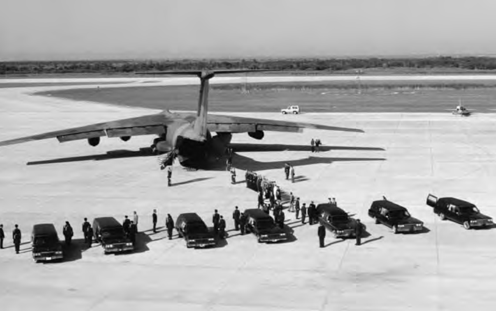
A Presidential Commission (the Rogers Commission, named after Commission Chairman William P. Rogers, a former Secretary of State in the Nixon administration) was formed by President Reagan on 3 February 1986 under Executive Order 12546 to investigate the accident, which by then had assumed national tragedy proportions. Four months later, the Commission issued its report which included the following conclusion on the cause of the accident:
The consensus of the Commission and participating investigative agencies is that the loss of the Space Shuttle Challenger was caused by a failure in the joint between the two lower segments of the right Solid Rocket Motor. The specific failure was the destruction of the seals that are intended to prevent hot gases from leaking through the joint during the propellant burn of the rocket motor. The evidence assembled by the Commission indicates that no other element of the Space Shuttle system contributed to this failure.52
Besides the tremendous shock of having lost a flight crew for the first time on an actual mission—other astronauts and astronaut candidates had been killed before during training and on ground tests—the space agency had to deal with the ramifications of a nearly three-year wait as the Shuttle would not fly again until September of 1988. The launch manifest had to be rearranged. Foremost among the considerations was to resume deployment of the TDRSs as soon as possible. Getting TDRSS operational had an extremely high priority at NASA as its capabilities were needed by so many science application satellite missions and of course, the Space Shuttle itself. The SN simply had to be established as quickly as possible after Shuttle flights resumed. In what is somewhat of a bittersweet irony, the TDRSS program in a way benefited from the Challenger disaster in that the hiatus allowed TDRS1 to be shaken down as a prototype. The added time before the launch of the next spacecraft, TDRS-3, allowed problems with TDRS-1 to be fixed. This probably led to longer useful life of the succeeding spacecraft.
After the accident, Shuttle launches were put on hold indefinitely. Since Challenger was to have launched all the early TDRS, NASA used this down time to begin modifying the payload bay of Discovery for it to assume this duty. Following the Rogers investigation and an extensive redesign to the SRBs, Return-to-Flight processing finally began in earnest in September of 1987.
On 16 May 1988, TDRS-3 arrived at the KSC from California followed by its IUS eight days later. By the end of May, mechanical mating of the two was complete. The pace picked up from there. On the morning of July 4th, in a symbolic gesture befitting the moment, the entire STS-26 stack was rolled-out of the Vehicle Assembly Building to take the Shuttle’s first steps back into space by making its three-mile journey to Pad 39B. Countdown tests were conducted over the next few weeks which revealed some leaks with the Main Propulsion System as well as the Orbital Maneuvering System. However, repairs were successfully done on the pad and on August 29, technicians installed the satellite into Discovery’s payload bay. One month later, NASA managers gave the final go-ahead for launch.53
At 11:37 a.m. EDT on the morning of 29 September 1988, STS26, with NASA’s most experienced crew to date, took to the skies of eastern Florida. After 32 long months, the Shuttle was back in space, this time flying with redesigned SRB field joints along with other safety and performance upgrades, including for the first time since STS-4, a (limited) crew escape capability. This time, the launch was flawless.54
Twelve minutes later, Discovery was in orbit. Onboard was TDRS3. Six hours after reaching orbit, the crew successfully sent it on its way to its geosynchronous destination over the Pacific. NASA had for some time considered not putting the TDRS-3 payload on STS-26 since it was going to be the first mission following Challenger. Risk analysis showed, however, that it would have made little difference in terms of probability to mission success whether the payload was launched then or on a later mission since launch risk did not vary significantly from mission to mission. More importantly, getting TDRS-3 deployed was critical for the success of missions down the line.
With TDRS-3 (and TDRS-1) firmly in orbit, NASA finally had its long-awaited, dual-satellite SN capability. The two were referred to as TDRS-West and a TDRS-East, respectively. But the constellation was far from complete. The network called for even more satellites, including on-orbit spares plus a replacement for the one that was lost on Challenger. In fact, the original, first generation constellation called for six satellites total. Today, there are nine TDRSS spacecraft on orbit all together.
In the years since, NASA has been criticized (mostly from opposition in Congress) as to why there are so many satellites “up there”? After all, only two are needed to provide 85 percent coverage while three can provide 100 percent. The answer lies in something called “availability of the system.” As a communications network, TDRSS, from the beginning, was designed with a very high probability that it would be there when needed. Thus, a very high mark or “figure-of-merit” was put on the system—an assurance that it was going to be available. Former Associate Administrator Charles Force explained what that meant in terms of the number of satellites required:
| Satellite | Launch Date | Shuttle Mission | Geosynchronous Longitude | Location |
|---|---|---|---|---|
| TDRS-1 (F1*) | April 4, 1983 | STS-6 Challenger | 49 W | Off the northeast coast of Brazil |
| TDRS-2 | January 28, 1986 | STS-51L Challenger | — | |
| TDRS-3 (F3) | September 29, 1988 | STS-26 Discovery | 85°E | Indian Ocean |
| TDRS-4 (F4) | March 13, 1989 | STS-29 Discovery | 41°W | Atlantic Ocean east of Brazil |
| TDRS-5 (F5) | August 2, 1991 | STS-43 Atlantis | 174°W | Pacific Ocean over the Phoenix Islands |
| TDRS-6 (F6) | January 13, 1993 | STS-54 Endeavour | 47°W | Off the northeast coast of Brazil |
| TDRS-7 (F7) | July 13, 1995 | STS-70 Discovery | 171°W | Pacific Ocean over the Phoenix Islands |
* GSFC designation F1 through F7 represents TDRS-1 through TDRS-7
There are more satellites and more capacity than you need because you are shooting at that mark. So that mark is what drove the number of TDRSs which were ordered and the replenishment satellites. . . .The reason goes right back to the criticality of it and the need to make sure that the capacity was there when needed. My analogy to a light switch:You turn on a switch and there is a satellite up there to do the job.56
Then the issue came up. What should NASA do with all these extra satellites—most of which were not needed yet because of the success of those already in orbit? The answer, in the eyes of the space agency, was quite simple: warehouse (store) them in orbit. Said Force:
There were some studies done, primarily by TRW . . . which said . . . there’s nothing on the satellite that really wears out with use except the solar cells degrade slightly with time, [so] there was plenty of capacity there. The riskiest thing about a TDRS is the launch phase, as demonstrated by the fact that we lost one on Challenger and the first one halfway to geosync because the IUS failed. So the decision at that point was, we’re better off storing them in orbit because then you get by the infant mortality—the launch failures and all that sort of stuff. So that’s basically why there are so many TDRSs up there. If you look at the requirement, having 96 percent probability that you’re going to have TDRSS capacity that is needed,…then you have to have x-number of TDRSs. And once you’ve got them, you might as well launch them and store them on-orbit.57
In fact, the operational availability of the TDRSS is not 96 percent but has exceeded 99 percent. This is thus a clear case where the requirement— and not the cost—drove the program.58
On 13 March 1989, TDRS-4 was launched on STS-29 again aboard Discovery. After successfully attaining orbit, it was slowly positioned as TDRS-East off the coast of Brazil. After that, TDRS-1 was slowly moved to the spare position where it has served ever since on a limited basis under the inauspicious name of WART (White Sands Complex Alternative Resource Terminal), used by the NSF in their research activities at the South Pole.
TDRS-5 followed on STS-43 on 2 August 1991, this time aboard the Shuttle Atlantis. Seventeen months later, on 13 January 1993, TDRS-6 was launched on STS-54 aboard Endeavour. The last of the first generation satellites, TDRS-7, (included with NASA’s Challenger replacement fund) went into orbit 13 July 1995 aboard Discovery on STS-70. It was the replacement for the one lost on Challenger. With it, NASA’s first generation TDRSS was completed.
Table 7-1 is a summary of the SN as it appeared during the 1990s. Since the satellites are capable of being repositioned and NASA at times changes their locations so as to maximize network efficiency or to meet specific mission demands, a good way to look at the table is that it shows the locations for a baseline TDRSS constellation.
If one were to take a close look at the satellite locations making up the TDRSS constellation, it can be seen that they are clustered in groups of roughly 130º apart in longitude around the Equator. This spacing is not by chance and has to do with where NASA wanted to put its central network ground terminal.
Take, for example, a case where two satellites are spaced 180° apart in geosynchronous orbit, one over the Eastern Hemisphere and the other over the West. In this arrangement, they would be able to provide complete global coverage. But due to curvature of Earth, however, two ground terminals would be required to communicate with them. If this spacing were to be reduced, however, from 180º to 130º, then only a single ground terminal would be needed.
Goddard network planners understood this well and very early on in the program, decided to take advantage of this by locating a single terminal at White Sands in southern New Mexico. The White Sands Ground Terminal (WSGT) provides a perfect line-of-sight vantage point from the western United States where communications with both TDRS-East and TDRS-West could be maintained. To protect physical security, NASA also wanted a location in the continental United States. Finally, like the Mojave Desert of California, White Sands is relatively dry in terms of annual rainfall, which is important since rain can interfere with Ku-band transmission—one of its few disadvantages.
In addition to meeting these requirements, White Sands had also continuously served NASA since 1961. Taken together, the decision to put the TDRSS ground terminal there was really quite logical. It is interesting to note that when the TDRSS Source Evaluation Board (SEB) was deciding between Western Union and RCA as to which would be awarded the contract, it gave the option for both bidders to propose putting the central ground terminal elsewhere, as long as it was within the continental United States. Neither bidder chose to do that, both opting instead to use the government-furnished land on White Sands, the birthplace of America’s missile testing activities 30 years earlier.59
Located 25 kilometers (16 miles) northeast of the city of Las Cruces, New Mexico, the WSGT is one of the largest and most complex communication terminals ever built. Run by the Space Network Project Office at the GSFC, the WSGT provides the acquisition and relay hardware and software necessary to ensure uninterrupted communications between customer spacecraft in orbit and the NASA Integrated Services Network (NISN) that interfaces to the various spacecraft control centers. In other words, it is the critical hub on the ground that links a user spacecraft to its control center. Without it, data from the TDRSS cannot reach its user and commands cannot be sent up to the satellite.
The NISN provides the critical ground circuits which make the system a true network; without it, TDRSS would just be a collection of satellites and antennas. The ground terminal maintains each TDRS spacecraft in a nominal communication mode (Ku-band) at all times and ensures that all systems aboard the spacecraft are properly configured and functioning properly. It transmits the so-called “forward” link traffic to each TDRS spacecraft for relay to the designated user satellite. Conversely, the ground terminal receives and processes customer spacecraft “return” link, formats and then transmits the data to the NISN interface which carries the data to the rest of the user community.
In addition to providing data services, the health and status of each TDRS spacecraft must be monitored. This is done by flight controllers at White Sands who also track “the birds” in space. As with any large space project, testing and simulation are done on a regular basis so as to evaluate the performance of all the elements that make up the system. For example, “mission sims” are conducted with White Sands sending commands via the tracking and data relay satellites to the user spacecraft, ordering it to perform certain functions and self-test diagnostics. If the tests involve the Shuttle or the ISS, these commands would originate from the JSC in Houston. Otherwise, they would come from the Project Control Centers at the GSFC or the Network Control Center (NCC) at White Sands.60
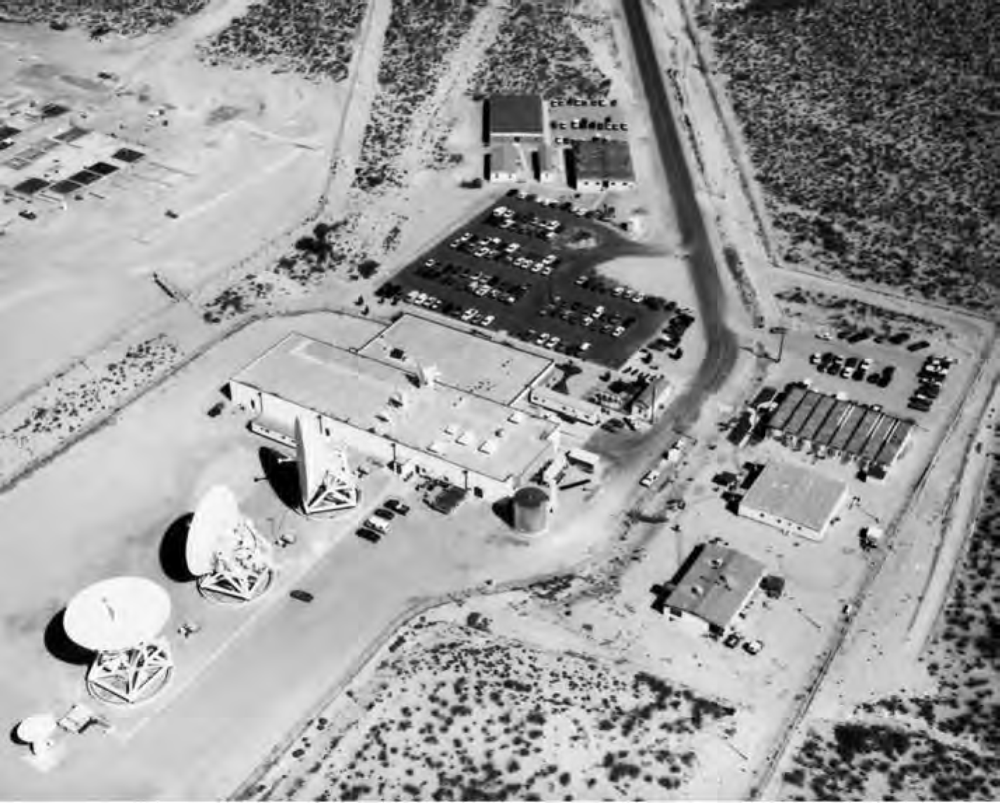
From the outside, the complex is dominated by three 60-foot Kuband dish antennas. Designated “North,” “South,” and “Central,” they are the link from the ground to the TDRSS spacecraft in geosynchronous orbit 35,900 kilometers in the sky. They handle every aspect of TDRSS transmissions, from voice to television to data. Satellite commands received from various NASA sources are also modulated onto Ku-band frequencies and transmitted to orbit via the system. Because of the extremely short wavelength of Ku-band signals, there is very little room for error. These antennas are extremely precise. Surfaces of these antenna dishes cannot deviate by more than 0.5 millimeter (0.02 inches) from norm (about the width of 20 human hairs) under the extremes of the Southwest desert climate, such as temperatures and winds, plus the loading variations introduced by gravity at various pointing angles. In addition to tolerance, they also have very narrow beamwidths operating in the Ku-band. As a result, Harris had to build them to very fine specifications so that they can be pointed at anytime to within 0.03 degree and track within 0.01 degree accuracy.61
The complexity of the system can be illustrated by looking at what goes on inside the TDRSS Operations Control Center, the large building next to the antennas. Satellite command and control functions ordinarily found in the space segment of a traditional communication system are, for TDRSS, performed by the ground terminal. At the heart of the WSGT are the three redundant Space-to-Ground Link Terminals (SGLTs) each of which is supported by one of the Ku-band antennas to transmit and receive user traffic. Here resides over 300 racks of state-of-the-art electronics equipment that handle everything from data routing to precise timing synchronized to the United States Naval Observatory cesium clock to nanosecond—one-billionth of a second—accuracy.
The three SGLTs operate autonomously and are, for the most part, fully redundant. This means that if one of the SGLTs were to fail, then only the TDRS and services supported by that SGLT would be impacted. Breaking down the system even further, each SGLT is capable of providing four, Single Access, forward and return services for customers. In addition to SA services, two of the three SGLTs can support up to five MA return services along with one forward MA service.
From this control center, NASA can schedule TDRSS support for users and distribute the data from White Sands. Also at the ground terminal are several smaller S-band Tracking, Telemetry & Command System (STTCS) antennas. These are used to provide contingency communications to a TDRSS spacecraft in the event of a SGLT failure. They are also used to communicate with the other on-orbit spare satellites. As an everyday analogy, the STTCS is somewhat like the “service elevator” in the back of a five-star hotel that is used for maintenance, whereas the SGLTs are like the main “guest elevators” that go directly from the guest floors to the front lobby. The White Sands ground terminal and satellites are all automatic and receive their operational inputs from the NCC at the GSFC. The NCC is critical to the operation of the system and is in many ways the brain of the system. Several functions are carried out by the NCC: 1) It serves as the user interface and command center of the system. 2) It provides overall management and monitoring of the system. 3) It sets up conflict free schedules and establishes the user unique configuration details (satellite assignment, start and stop times, antenna assignment, pointing information) required for the satellites. To this end, over 40 unique configurable items can be provided by the NCC.62
As technically challenging as the whole process seemed, the Agency had good evidence that it was all going to work out. A data relay satellite, ATS6, had been used with success in 1975 on the Apollo-Soyuz Test Project. Two years later, on 6 December 1977, the Seasat Program provided for data transmission via satellite from Alaska simultaneously to the GSFC and the Naval Fleet Numerical Weather Center in Monterey California. Even though the data rate was a low 1.544 Mbps, the transmissions served as a feasibility demonstration for the WSGT which would end up using the same types of circuits.63
On 17 August 1981, four years after ground break on the project, Ed Smylie, Associate Administrator for Tracking and Data Acquisition, presided over the acceptance ceremony of the White Sands TDRSS Ground Terminal. Other NASA dignitaries included Jesse C. Jones, the new Facility Manager and his Deputy Louis Gomez. The opening of this new communications terminal—the largest of its kind anywhere in the world—was a much needed infusion to the south New Mexico economy which has been tied so closely to the DOD. In 1981, for instance, the value of NASA’s contracts and grants to institutions in New Mexico, and White Sands in particular, provided between $20 to $30 million per year and accounted for 600 jobs and 66 contracts in the private sector and universities such as New Mexico State University in nearby Las Cruces and the New Mexico Institute of Technology in Socorro.64
With Holloman Air Force Base—operating right outside the gates of White Sands Missile Range—soon to be designated as the home for the Air Force’s then most advanced and stealthy aircraft, the F-117A Nighthawk (better known as the Stealth Fighter), the flatlands of Otero County soon boasted some of the most advanced technology found anywhere. Added to this was the diverse work NASA was doing with the Department of the Interior in the use of remote sensing for diverse applications such as timber management, land cover classification, grasslands range management, and deer habitat identification.
On the cultural realm, satellite remote sensing technology supported by TDRSS was used by the National Parks Service to uncover features of prehistoric ruins not visible by conventional aerial photography. As an example, Smylie pointed out in his dedication speech the new insight into the society of the Anasazi Indians that had been gained by remote sensing. TDRSS continues to support Earth science research today.65
With six TDRSS spacecraft now in orbit, the question of reliability and the need to support more than just three operational satellites (TDRS-East, TDRS-West and the spare) became an issue. The WSGT had three antenna systems, perfect for supporting these three operational spacecraft. But now six TDRSs were in orbit all needing support from the ground. This, combined with a host of data-intensive missions that NASA was planning—missions such as the Great Observatories, Spacelab and Spacehab (orbital workshops attached to the Shuttle payload bay), Space Station Freedom (the canceled, U.S.only forerunner to the ISS) and the Cosmic Background Explorer—and the huge amounts of data returned to Earth all pointed to the need for a second TDRSS ground terminal. In August of 1987, NASA approved Project 9717 to construct a Second TDRSS Ground Terminal at White Sands.
The STGT, as it would be called, is identical to the first terminal and is in fact located just five kilometers (three miles) to the north. Its purpose is really twofold: In addition to keeping up with America’s spaceflight communication requirements in the 1990s and beyond, it would serve as a backup to the WSGT, eliminating it as a single point of failure in the event of a breakdown or during planned outages for system upgrades and repairs.66 This point was driven home on 1 September 1983. On that day, controllers were busy checking out the TDRS-1 spacecraft after it had finally made it to its duty station in geosynchronous orbit, when a sudden failure at the WSGT caused a three-hour communication outage with the Shuttle (STS-8). Flight controllers did not wake the crew, however, since all indications through other communication links (transponders were in place which could operate in either TDRS or ground network mode) showed that everything was otherwise normal onboard the vehicle and that this was strictly a communications problem.67 Nevertheless, it was a good lesson that a backup was needed. In fact, this second ground terminal was considered so important that design specifications called for it to have greater than 0.9999 reliability, or less than one hour per year of down time.68
In 1987, the TDRSS program office initiated competitive definition phase studies for the development of a STGT. A year later, General Electric’s Military and Data Systems Operations of Valley Forge, Pennsylvania, received the prime contract to build the second terminal. This included all the design, development, installation, and testing of the $245 million worth of communication and computer hardware along with all the software. The $14 million building construction contract was awarded to Argee Corporation, a civil and mining construction company of Denver, Colorado.69
As massive as the original, this new terminal also boasted a 7,430- square meter (80,000-square foot) operations building, a 2,320-square meter (25,000-square foot) technical support building and an 830-square meter (9,000square foot) power plant. Coming on the heels of the Challenger accident, and with the rather significant windfall to southern New Mexico economy, ground breaking for the new terminal on 9 September 1987 was quite the public affairs event. Speakers included Robert O. Aller, NASA Associate Administrator for Space Tracking and Data Systems; GSFC Deputy Director John J. Quann; and Captain Frederick H. “Rick” Hauck, Commander of the first mission following Challenger. In addition to representatives from State and U.S. Congress, dignitaries included Major General Joseph S. Owens, Commander of the White Sands Missile Range; John P. Stapp and Gregory P. Kennedy from Alamogordo’s own International Space Hall of Fame (one of New Mexico’s top tourist attractions); and even archaeologists from nearby Las Cruces.70
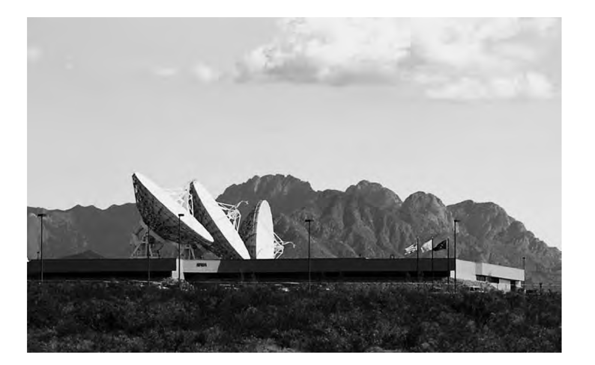
Before any concrete could be poured, though, NASA had an obligation, this one regarding the environment. In keeping with its federal mandate to protect cultural and natural resources, test excavations had to be conducted near the site of the terminal to see if construction would adversely impact any significant archaeological or historical sites. To this end, the space agency hired the firm of Batcho & Kauffman from Las Cruces to serve as archaeological consultants for this new Space Age project.
Sure enough, excavations soon uncovered Native American artifacts on the site. Further digs revealed that NASA had in fact stumbled onto quite the archaeological find. In their report, the archaeologists noted that: “ . . . it soon became apparent that one of the sites contained the undisturbed remains of a pithouse settlement, while the other—located a few miles farther south—contained the remains of a temporary camp, probably once used to gather and process wild foods.”71
Further research showed these pithouses to be a common type of dwelling used by prehistoric Indians in the Southwest United States. Charred roofing material was also found which carbon dated to some time between 650 and 750 A.D., meaning the site was more than 1,300 years old! In addition to the pithouse settlements themselves, a broad area around the dig was also excavated in what archaeologists call the “activity areas.” The completeness of the find was confirmed as the activity areas contained the remains of outdoor camp and cooking fires, as well as large quantities of debris including pieces of broken pottery, several arrowheads and discarded or broken stone tools and the chips of stones leftover from making them. Also found was a large amount of burnt and unburnt animal bones—the last remains of many meals.
Because of the find, NASA had to move to a second, nearby site. It too was excavated. Though not as robust as the first site, a well-preserved roasting pit, about 1,000 years old, was found. Based on information from early settlers in the area, archaeologists were able to trace the find back to the original Mescalero Apaches of the Southwest.
Construction of the terminal eventually embarked on a plot of land near the archaeological find. As serendipity would have it, what started out as NASA simply fulfilling a legal obligation unexpectedly turned into a portal to the past. As one of the archaeologists on the project put it: “While construction is about to begin on this new, high technology facility—to give us another window into space—archaeologists have, likewise, been able to open a small, yet intimate, window into the dim past.”72
Two and a half years after the ground breaking ceremony, Agency officials once again returned to White Sands, this time to hold a formal ribbon cutting ceremony dedicating the new and second White Sands terminal. Present at the February 1990 ceremony were NASA Administrator Richard H. Truly and his wife; Goddard Center Director John W. Townsend, Jr.; a contingent of New Mexico officials from Albuquerque and Las Cruces; and astronauts John E. Blaha and James F. Buchli, crewmembers of STS-29 that deployed TDRS-4.73
With civil construction finished and the new terminal set to open, the Agency wanted something special to tie the White Sands Complex (note the new name) to the Native American and Southwestern roots of New Mexico. After considering several options, the Office of Space Communications, along with the nonprofit New Mexico Space Grant Consortium and New Mexico State University, decided to sponsor a “Name the Ground Terminals” contest.
In keeping with the spirit of the “Land of Enchantment” and the Agency’s charter, entries had to 1) Relate to Native American, Hispanic or African American local culture; 2) Be appropriate for space communications and America’s involvement in space; 3) Limited to one to two words in length; and 4) Show relationship between the two names. Teams from elementary, middle and high schools in qualifying school districts of southern New Mexico competed. These teams had to abide by some simple rules, such as four students per team along with a team coordinator. Teachers were responsible for guiding their team’s activities and for submitting their entry. And each team could submit only two names, one for each ground terminal.74
Just as NASA had hoped, the contest proved to be popular, especially among elementary and middle schoolers. More than 100 entries were received. From these, two names—submitted by a team of four girls from Zia Middle School in Las Cruces—were selected: Cacique (kah-see-keh) which means “leader” and Danzante (dahn-zahn-teh) which means “dancer”. Roots of the winning names can be traced back to the Tortugas Indians who preserve their culture through traditional dance. In reaching the names, “the students compared the TDRSS to the Tortugas dancers. The dancers communicate through complex maneuvers as do the TDRSS satellites, [and] the ground terminals are the leaders of this orbital dance,” said Wilson T. Lundy, Manager of the White Sands Complex, in an interview after the winning entrants were selected.75
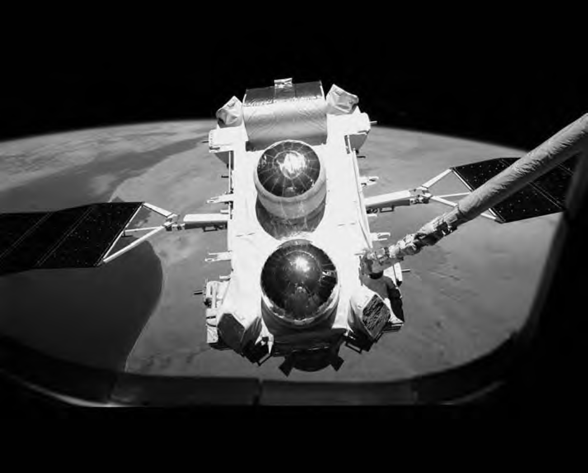
NASA was elated. As Charles Force put it, “To those familiar with the culture of the Southwest, these names will give meaning to the purpose of the stations. To those who understand the role of the stations, the names will convey appreciation for the culture of the area.”76 Although the names of the stations were never really embraced by the technical community, the contest was politically successful and had more than fulfilled its purpose.
As for the four girls from Zia Middle School, they received a two-day, all expenses paid trip to tour the JSC in neighboring Texas. In a ceremony on 17 May 1993, the names for the White Sands terminals were officially announced, with presentation of awards to the students by retired Apollo 8 Commander and Las Cruces businessman Frank Borman.A year later, the Danzante terminal was accepted by NASA and declared a fully operational part of the TDRSS.
On the morning of 5 April 1991, the Shuttle Atlantis took off on a six-day mission, the highlight of which was deployment of the CGRO. Named after Ohio Nobel Prize laureate Arthur Holly Compton for his research demonstrating the particle behavior of electromagnetic radiation, the second of NASA’s “Great Observatories” to be launched into space, the CGRO, at 17 metric tons (37,500 pounds), was the heaviest astrophysical payload ever flown into space.
The Great Observatories of NASA were four of the largest and most powerful space-based telescopes ever put into orbit. Each was similar in terms of its size, cost and scope of the program, and all have since made a substantial contribution to our understanding of the deep space environment, greatly expanding our knowledge of the known universe. Each of these four space-based observatories was designed to investigate a specific region of the electromagnetic spectrum.
Undoubtedly the best known of the four is the first one to be put into space: the $1.5 billion Hubble Space Telescope (HST). Launched aboard STS-31 on 24 April 1990, the HST primarily observes the visible spectrum. Besides the incredible photographs that have since come from the telescope, it also received a lot of media scrutiny early-on over its “blurred vision,” a manifestation of a manufacturing imperfection in which the objective mirror was ground too flat by 2.2-microns, or 1/50th the width of a human hair. Demonstrating the irreplaceable value of human spaceflight, this error was corrected when the crew of STS-61, over the course of four spacewalks, installed and checked out corrective optics to the telescope in December 1993.
Besides the HST and CGRO,there is the Chandra X-ray Observatory, launched on 23 July 1999 aboard STS-93 and the Space Infrared Telescope Facility (SIRTF) whose primary mission, as its name implies, is observation of the infrared spectrum. (The SIRTF, launched on 25 August 2003 aboard a Delta II rocket, was later renamed the Spitzer Space Telescope.)77 Aside from performing each telescope’s own mission, most of which cannot be replicated by ground observatories, the Great Observatories program allows the four to synergistically interact with each other for greater combined scientific returns.Each astronomical object in the sky radiates in different wavelengths. But by training two or more observatories on an object,combined data can be returned to paint a much more comprehensive picture than is possible with just a single instrument.78
After its deployment from STS-37, the CGRO operated as advertised for almost a year, returning more data on that portion of the electromagnetic spectrum than the previous six decades put together. But in March 1992, it suffered a failure of its two onboard tape recorders which restricted downlinks of scientific data to real time only. With the tape recorders gone, CGRO was able to relay only slightly more than half of the science data it collected, because it could not point at a TDRS all the time.
While TDRSS coverage had been about 65 percent of each orbit, scientists could not even collect that percentage of data anymore because Compton’s instruments had to be turned off during the part of each orbit when it passed through the elevated background radiation of the South Atlantic Anomaly—a region of significantly increased space radiation experienced by satellites passing over the South Atlantic Ocean.79 This reduction in data return presented an obstacle to the Goddard science team. NASA, understandably, wanted to get back to the point where all of the data could be retrieved. Furthermore, real-time data dumps could only be done at the very slow rate of 32 kilobits-per-second whereas the playback rate was 512 kilobits-per-second.80
Considering all these factors, in March 1992, Goddard’s Mission Operations and Data Systems Division was tasked to study approaches to solve this problem utilizing any combination of ground or space resources available. Analysis quickly ruled out an independent, Compton-only, ground station as a solution due to potential high cost with a relatively small increase in additional coverage. An on-orbit Shuttle repair was also looked at but proved too costly, even if just one time. But the same study showed that a TDRSS solution could produce (up to) full, 100 percent coverage for the Compton observatory.81
The solution was this. One of the existing TDRS spacecraft had to be moved and located somewhere over the Indian Ocean. Despite the fact that TDRS-1 was near the end of its 10 year design life, it was apparent that its remaining functionality—fuel, health, and condition of onboard instruments—was still meeting the requirements needed for an Indian Ocean satellite. Since this location could not be viewed by the White Sands Complex (being inside the so-called Zone of Exclusion from North America), the solution was to consider a ground terminal which could see a TDRS spacecraft if placed over the Indian Ocean.
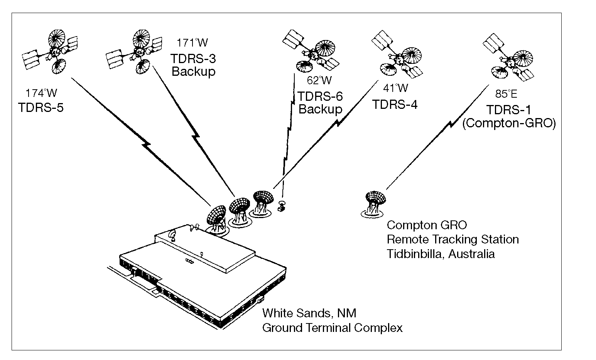
The existing DSN sites at Madrid and Canberra could observe the TDRS and were thus (initially) the prime candidates. Of the two, Canberra had a slightly better line-of-sight. In addition, it had the advantage of being located in an English speaking country and had a NASA-like culture in its operating infrastructure, the Australian Space Office (ASO). Other ground locations were examined too, for example eastern Africa, but were disqualified mainly because they were not under direct NASA control.82
Following completion of the study that summer, Goddard sent out a site survey team, which along with members of the ASO, visited five sites throughout the commonwealth. Reminiscent of the old STADAN days, the team considered such factors as existing hardware, accessibility to long distance communications, transportation and overall logistical support requirements. Based on this survey, the NASA site at the Canberra Deep Space Communication Complex (CDSCC) was selected. The pace of establishing the site was of a high priority since a period of “best science” solar activity was then fast approaching.
The $12 million, GRO Remote Terminal System (GRTS) project was started without delay on 1 September 1992. Scheduled for completion in 13 months, the station was built leveraging maximum use of existing equipment. Essentially all of the TT&C equipment was transferred from existing resources at other Goddard facilities. Redundancy in design was exploited, to the extent feasible and practical, so as to attain good mission assurance. In addition, the TT&C equipment used was purposely identical to the existing equipment on the CDSCC Deep Space side so that any additional training, repair and logistics would be minimized. All of the remaining hardware, such as the 9-meter (30-foot) S-band and 5-meter (16.4-foot) Ku-band antennas, were bought using existing, commercial-off-the-shelf (COTS) designs. In fact, the overall design of the GRTS was based on that recently used to complete the STGT at the White Sands Complex.
With the help of Raytheon Service Company as the procurement agent and Allied Signal Technical Services Corporation providing technical support, Goddard was able to complete the entire procurement process— specifications, solicitations, and negotiation—by January 1993. The Australian contribution was significant too, as all of the construction was done in four months. This included two antennas, two new S- and Ku-band transmitter buildings and a two-kilometer fiber optic cable-run to a remote calibration site—an amazing feat in that amount of time.83
On 29 November 1993, White Sands sent a series of commands to begin drifting TDRS-1 from its location over the Phoenix Islands in the Pacific to the Indian Ocean. The trip took 73 days. A week later, the nearly completed GRTS at Tidbinbilla made first contact with the satellite. Then on 9 February 1994, commands were sent to stabilize the spacecraft at its duty station 85° East longitude over the middle of the Indian Ocean. TDRS-1 was now perched atop the Eastern Hemisphere and NASA finally had a truly global SN. Data from the Compton was received by TDRS-1, downlinked to Tidbinbilla, relayed up to an Intelsat commercial satellite where it was downlinked to a commercial terminal on the West Coast and then routed to White Sands. From there, the data was distributed to scientists around the world. Control of TDRS-1 and the Tidbinbilla ground terminal remained at White Sands, marking the first time NASA controlled an out-of-view TDRS from that location.
On 14 March 1994, the Agency officially announced the opening of the new, remote ground station in Tidbinbilla, Australia. “With activation of this ground facility, the TDRS System can, for the first time, provide global coverage,” said Charles Force in declaring the new TDRSS station operational. “While the new ground station is devoted to Compton at this time, it has the potential for use by other Earth-orbiting spacecraft.”84
Compton scientists were elated. Frank J. Stocklin, a mission manager at Goddard compared the added capability to the repair of the Hubble Space Telescope:
We’re very pleased that this project came in on budget and on time and that we are able to collect additional, significant data from Compton in a cost-effective manner. It’s difficult to place a dollar value on the additional science data obtained in this effort, but the restoration of data recovery capability is similar to that done for the HST, and marks the second successful recovery of a major NASA observatory.85
Almost immediately, Compton scientists saw a 30 percent jump in data returned from their observatory. As useful as the Tidbinbilla station at the CDSCC was, though, it still had its fair share of drawbacks. First, the location resulted in a lower than desirable elevation look angle to the TDRS in orbit. Another problem was related to the inability of TDRS-1 to point its Space Ground Link (SGL) antenna far enough south to Canberra to maximize the coverage duration for users besides just the Compton observatory. While not a serious problem, another location could be better. Then there was the cost factor. The ongoing grip of a fiscal mandate to reduce annual maintenance and operating costs required some form of ground station automation. And finally, there was the geopolitical factor. While the British Commonwealth is among the strongest of America’s allies—cooperation of Australia with NASA had been impeccable since the days of Minitrack—the United States wanted something as important as an overseas TDRSS ground terminal on American soil, if at all possible. TDRSS had become a national resource. Although not a military asset, the missions and programs it supported had national security implications. A “U.S. territory-based solution” was highly desirable.
Guam, once again, stood out. In addition to being a longtime U.S. territory, there is the stability offered by virtue of having key DOD presence on the island. From its location in the Mariana Islands, Guam is closer to the Equator and longitude to a TDRS spacecraft over the Indian Ocean, allowing it to accommodate much higher antenna elevation angles than is possible from Australia. Besides, the Agency had only just left the island in 1989, finally closing down the Guam STDN station after 24 years as one of the most successful stations in the history of the Agency’s networks. Thomas A. Gitlin, Goddard’s former ground terminal Project Manager summarized it concisely: “NASA built the Guam ground station to significantly expand the quantity and quality of services we provide to all our customers.”86
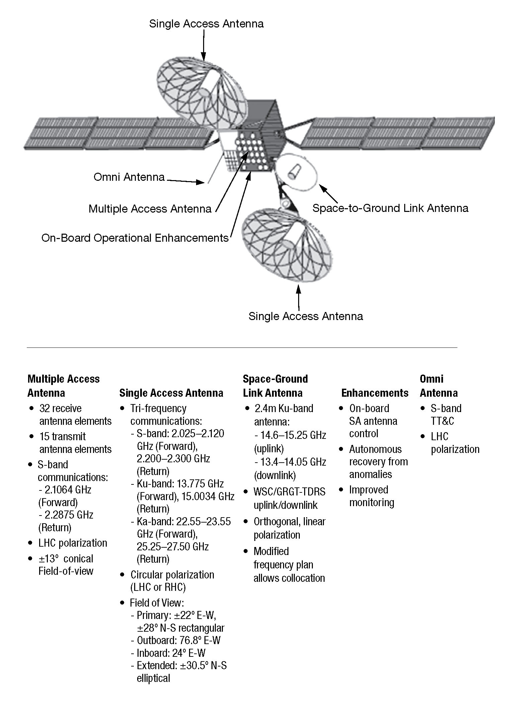
In 1995, NASA was ready to begin funding for a new Guam Remote Ground Terminal, or GRGT. With the acceptance of the second terminal at White Sands the previous year and the launch of TDRS-7 to complete the satellite constellation, $9 million of SN funds became available for this project. The remaining $12.4 million needed (for a total of $21.4 million) also came from within the SN program office, but in two parts—from phase-down of the Compton GRTS in Tidbinbilla and from an unexpected source: greater-thananticipated reimbursements by the Columbia Communications Corporation for revenues from their agreement with NASA for the lease of excess C-band services on the TDRSS. This last point could be called the “remnant” of the Western Union debacle, albeit a positive one. Under the original TDRSS contract, a reimbursable, long-term plan for using the commercial capability built into the original Western Union TDRS design was negotiated. Despite a long, drawn-out, legal process to recover the expected commercial reimbursement (involving the Small Business Administration and the courts), the nightmarish process did eventually return funds to the Agency and was a good use for a C-band system that was otherwise totally superfluous.87
The GRGT was designed from the beginning to be a fully automated, remote station, identical in most respects to its White Sands counterpart in the United States. Situated on the secure grounds of the Computer and Telecommunications Area, Master Station Receiver Site of the U.S. Navy base, the station is distinguished by two large radomes which enclose the 5meter (16.4-foot) Ku-band and 9-meter (30-foot) S-band antennas, protecting them from the typhoons of the central Pacific. Equal in performance with the terminals in New Mexico, the Guam terminal provides relay services in the form of two S-band and two Ku-band forward and return links. High rate, forward service to customer satellites is done at 25 million bits-per-second (Mb/s) while the return service rate is double that, at 50 Mb/s.
Three years after getting the go-ahead, the GRGT was officially opened in a ribbon-cutting ceremony held on 15 July 1998. Although Governor Guerrero was not present this time, the legacy he helped set in bringing NASA’s first tracking station to the island three decades earlier had, in a way, come full circle. With the Guam terminal operational, the SN’s Zone of Exclusion was closed and TDRSS could now provide 100 percent coverage regardless of where a satellite is in low-Earth orbit. With the project completed, the original Compton remote terminal in Tidbinbella was shut down as planned.88
Even before the first TDRS was deployed by the crew of STS-6 in April 1983, NASA was already planning for the day when the original TDRSS spacecraft would need to be replaced or replenished after their projected 10-year service life expired. The space agency (and space communications in general) could take advantage of an increase in capabilities brought on by a more advanced, second generation of TDRSS spacecraft. A big factor was that with TDRS-1 through 7, communication links for the Space Shuttle, the HST and its Great Observatory companions, and other Earth-orbiting space missions are limited to the S- and Ku-bands.
In 1981 and 1982, the Office of Space Tracking and Data Systems (OSTDA) conducted a “Prephase A Advanced Study” to look at an advanced TDRS System in which communications would utilize the even more efficient Ka-band of the radio frequency spectrum.Even at that time,the increasing number of users in the S-band was starting to crowd that part of the RF spectrum. It was obvious that the congestion was only going to get worse as the number of satellite users increased in the coming years.With the second generation—or TDRS-II—spacecraft, users would be able to take advantage of Ka-band links to transmit at higher data rates.Along with the higher frequency, smaller antennas could be used than those required at Ku-band—just like smaller antennas are required for Ku-band compared to S-band (and VHF before that).89
Following the cessation of all Shuttle flights that ensued after Challenger, a Phase A Preliminary Analysis for the TDRS-II was conducted, even as the initial satellite constellation was still being completed. A Phase B Definition Study followed in August of 1990. With this year-long study, specific requirements of a TDRS-II spacecraft were defined, along with specifications and a roadmap of the potential migration of services to the Ka-band. Issues which would affect this migration of services to Ka-band were addressed, such as availability of commercial off-the-shelf space-qualified antennas and equipment with acceptable performance, weight, size, power consumption, and cost. On the user end, the study looked at the development and qualification of customer antennas which would be needed.
The replenishment program would have three TDRS-II spacecraft—designated TDRS-H, I and J—that would support customer services currently provided by TDRS-1 through 7. The three new satellites would be functionally equivalent to the original spacecraft with the exception of the added Ka-band communications capability and an improved MA capability. But there was a major difference, one primarily philosophical. The original TDRS spacecraft—not including TDRS-7—hosted a Ku-band commercial payload which was to have been used by Western Union but was never activated, and a commercial C-band antenna and payload package, two of which are operated by a commercial service provider. To stay far away from the “shared system” approach this time, TDRS-H, I and J were dedicated from the beginning to NASA missions and did not include a commercial Ku or C-band payload. To minimize impact to the user community, the spacecraft was designed such that Ka-band used the same SGL design that the original Kuband used. In this way, transmissions at the new frequency were essentially transparent to the ground station.90
Looking like a high-end version of the original spacecraft, the second generation TDRSS spacecraft was still dominated by two 4.5-meter (14.8-foot) diameter steerable SA antennas and a pair of wing-like, solar arrays spanning almost 21 meters (68 feet) from one end to the other. But with a fully-fueled launch weight of 3,175 kilograms (7,000 pounds), it was nearly 900 kilograms (2,000 pounds) heavier than the original.91 Based on the then newly developed Hughes Spacecraft 601 bus structure, the electrical power, attitude determination and control system, and the TT&C units were all mounted on the central bus structure, as were the solar arrays.
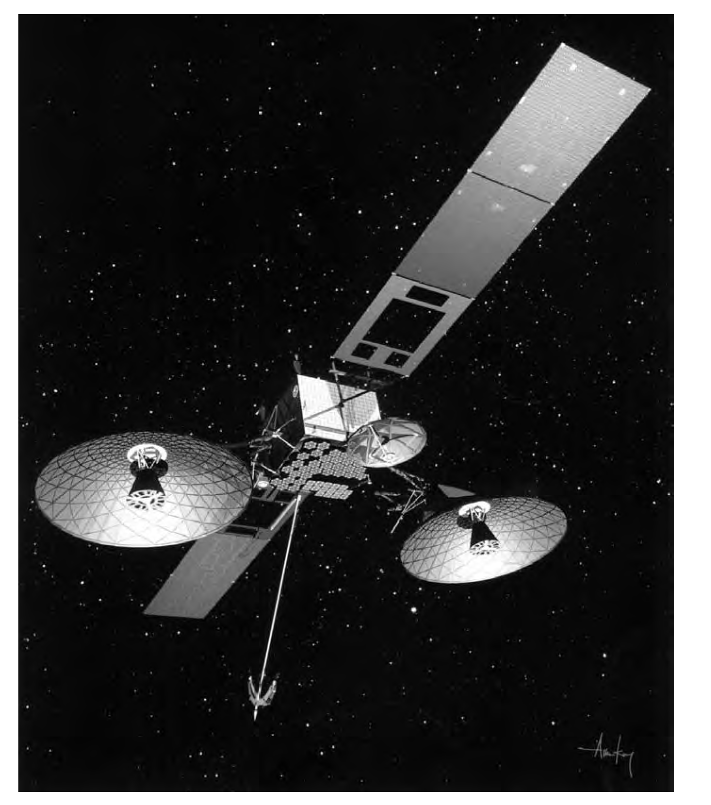
While the original TDRS used hydrazine monopropellant, the new spacecraft now used the higher performing bi-propellant combination of monomethyl hydrazine fuel and nitrogen tetroxide oxidizer for attitude control and main propulsion. This was a proven propellant combination that has been used in the Apollo spacecraft and the Space Shuttle. The RCS used this propulsion system to feed a 110-pound thrust (490-newton) liquid apogee kick motor (used for orbit insertion), along with four 2-pound thrusters (9-newton) and eight 5-pound thrusters (22-newton) mounted around the periphery of the main spacecraft bus to support on-orbit operations over its 15-year service life.92
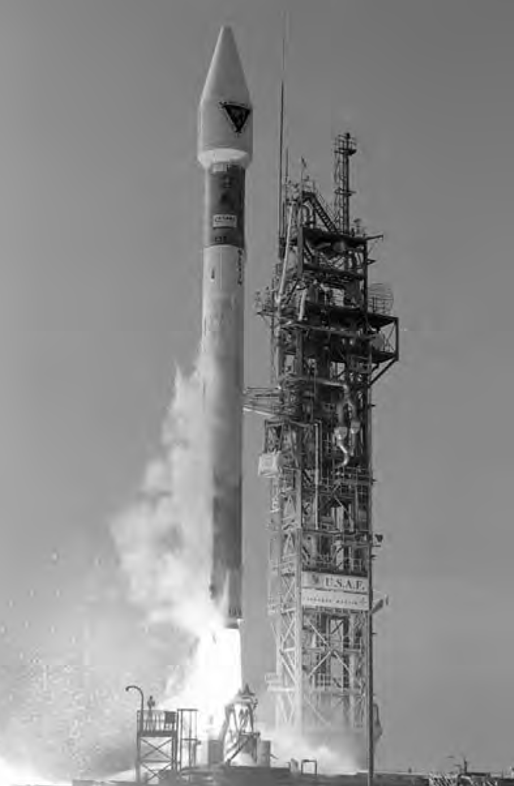
In addition to the RCS jets, attitude control was passively maintained using a gimbaled momentum wheel for three-axis torquing and angular momentum “storage.” Continuously operating gyros—updated by Earth and Sun sensors on the spacecraft—provided highly accurate, three-axis attitude sensing to point the spacecraft and its antennas in the proper attitude in the weightlessness of space. Since the nature of Ka-band transmissions required a narrower beam and thus tighter pointing accuracy than Ku or S-band, the rate gyros used on TDRSS-II were much more robust and had significantly fewer moving parts (that can wear out) than those on the first generation satellites.93
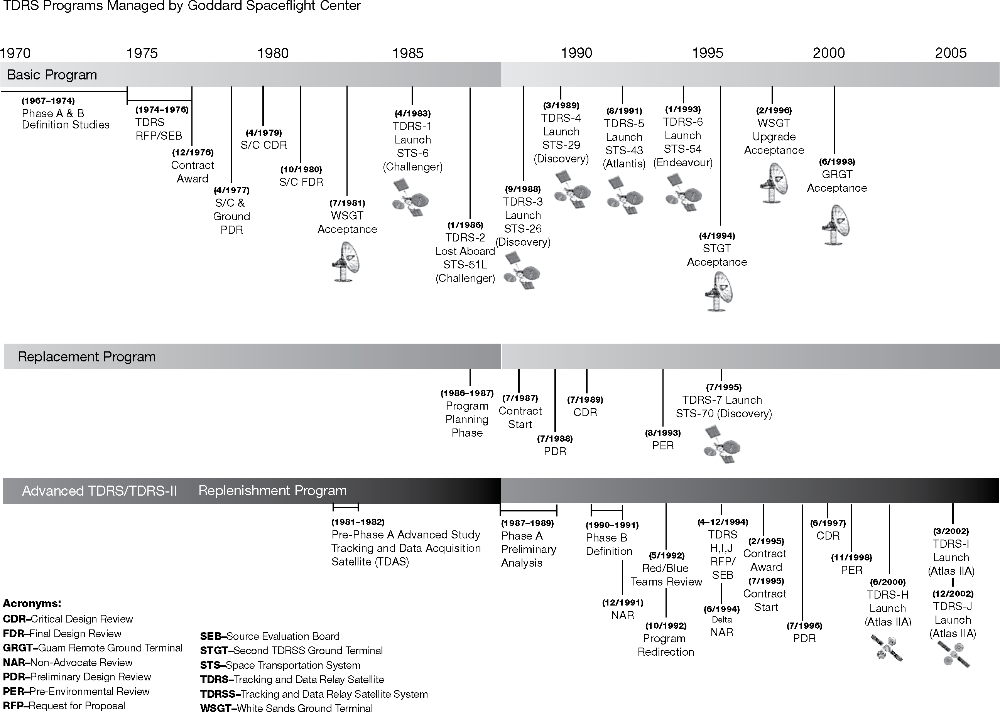
Integrated into the main bus structure was a system of heat pipes, multi-layer insulation, radiators and thermostatic heater controls that provided thermal control to the spacecraft—a necessity in the harsh environment of geosynchronous orbit. Then there were the two wing-like power arrays covered with silicon solar cells designed to last 15 years. They provided approximately 2,300 watts of power, enough to light some 30 common household light bulbs. Besides providing electrical power to the spacecraft, they also charged four nickel-hydrogen battery packs which supplied power when the spacecraft was in darkness.94
Just like the first generation TDRS, the most prominent part of spacecraft H, I, and J were the two, mechanically steerable SA antennas. Made of a flexible, graphite reinforced, epoxy mesh, the antennas were furled into a taco-like shape and stored for launch. Once deployed, they unfurled and with an innovative “spring-back” design, fine adjustments could be made to compensate for on-orbit changes in the dish contour from things like heating and cooling in the vacuum of space. The SA antennas used a tri-band electronic feed—the device at the focus of the antenna which receives and transmits signals—to accommodate frequencies in S-, Ku- and Ka-bands. With S-band, user satellites with lower gain (less sensitive) antennas, or MA users temporarily requiring an increased data rate, could be accommodated.95
It was used, for instance, to support human missions, science data missions such as the HST, and satellite data dumps. With Ka-band, higher bandwidth items such as high-resolution digital television—including all Space Shuttle video—could be relayed. Also, more transmission traffic and higher volumes of data could be dumped to the ground. Finally, with the significant increase in transmission performance (so called “figure-of-merit” increase) afforded by Ka-band, transmission rates approaching the realm of a billion bits-per-second (1 Gbps) were possible. At the TDRS-II specification of 800 million bits-per-second, it was over two and half times faster than what was possible with the original TDRS operating at Ku-band.96 Again using the encyclopedia analogy, that was somewhat akin to downloading ten 20-volume encyclopedias each second.
Requests for proposals to build the three next generation satellites were issued in April of 1994. After a six-month evaluation, the SEB consisting of members from GSFC and NASA Headquarters presented its recommendation to the Source Selection Official, Charles Force. Force and the SEB were convinced that Hughes Space and Communications of Los Angeles (now Boeing Satellite Systems after its acquisition in 2000) was the best contractor for the job. Not wanting a repeat of the whole Western Union affair, the agency this time went with a well-established satellite manufacturer and the producer of the commercially proven 601 spacecraft bus design. (Founded by billionaire aviator Howard R. Hughes, Jr., the company was in fact the world’s largest supplier of commercial satellites in 1995.)
Work started in July, five months after the official announcement. This time, the progress was smooth. Over the next two years, the contractor worked with GSFC to move TDRS-II from a set of requirements onto the drawing table and finally into a design which would fly. After passing the Critical Design Review in June 1997, the pace picked up as manufacturing and testing on the first new satellite, TDRS-H, entered final production.97
One major difference between the second generation TDRS spacecraft and their predecessors was in the way they went into space. The original TDRS were launched by the Space Shuttle exclusively. In a move that can still be traced back to the Challenger accident, TDRS-H, I, and J were launched by an intermediate class of expendable launch vehicles, the Lockheed Martin Atlas II-A. Developed to fulfill an expendable launch vehicle requirement to supplement United States launch capability following the accident, the Atlas II-A, along with its variants, was a two-and-a half stage liquid propellant rocket. (The Centaur upper-stage was a so-called “half stage” since it was used to position the payload into a separation orbit after booster burnout.) Following separation from the Atlas, the TDRS spacecraft was injected into its final orbit using its own apogee kick motor.
Launch services using the Atlas II-A were finalized as early as 1997. Nearly three years later, the new TDRS-II spacecraft was ready. On 30 June 2000, TDRS-H successfully lifted off from Launch Complex 36 at Cape Canaveral. Since the satellite was not launched by NASA, Boeing had the overall responsibility to make sure that it got onto orbit as advertised prior to the Agency taking control. It attained orbit without any problems. Its acceptance by NASA was delayed, though, due to lower than expected performance of the new MA phased array antenna. As a result, ground controllers discovered that 5 of the 18 communications services provided by TDRS-H performed at less than full capability.
This degradation puzzled both Boeing and NASA since the spacecraft had checked out perfectly on the ground. After a month of troubleshooting, the culprit was found. Randy H. Brinkley, President of Boeing Satellite Systems explained at the time that the hidden problem was traced back to a material defect. “We identified the cause of the problem to be rooted in one specific material used in the assembly of the antenna and implemented straightforward corrective measures for TDRS-I and TDRS-J. We are certain that a repeat of this performance shortfall will not occur.”98
Manufacturing changes were implemented and 18 months later, on 8 March 2002, the next spacecraft was launched. This time, it performed flawlessly. TDRS-I was followed into orbit 9 months later with the launch of the final satellite, TDRS-J, on 4 December 2002.
The three satellites were initially launched into their on-orbit “storage locations” over the Phoenix Islands in the mid-Pacific; off the west coast of South America near Ecuador; and off the Brazilian coast over the Atlantic. There, the satellites stayed, almost in a “garaged” fashion, until they were needed. The advantage of having these spacecraft in orbit was that the Explorations, Operations, Communications and Navigation Systems Division of Goddard, who manages the SN, may change the geosynchronous location of any TDRS to any other geosynchronous location assigned to NASA. This allowed collocation of two spacecraft in one longitudinal setting. Two second generation spacecraft could be located together, if needed, or one first generation with one second generation. This was quite useful and allowed the use of two partially failed spacecraft to be collocated to conserve the limited slots available at geosynchronous altitude and to pool together their capabilities.99
With TDRS-II available, the SN was much more flexible and more options could be exercised to optimize the TDRSS network for all users. A case in point was a high data rate user such as a remote sensing mission with large amounts of imaging data. This satellite, which could have onboard several bandwidth-intensive instruments, may generate up to three-terabits (3,000,000,000,000) per day of science data. On top of that was the required “overhead” information such as data for link protocols and error correction coding, adding another 16 percent or more to the raw science data.100 With the first generation TDRS, it would have taken over three hours each day just to transfer this data from the spacecraft to the ground. A Ka-band TDRS-II SA link at a rate of 800 Mb/s reduced this to about 72 minutes per day. NASA may schedule this data transfer in a number of ways. For instance, 5 minutes of TDRSS service for every orbit of a satellite or 10 minutes of service on every other orbit. If the data was time sensitive, Ka-band service allowed for near instantaneous availability of the data to its users, much more so than with the original system. While S- and Ku-band capabilities also provided near instantaneous services, they required significantly longer transfer times.101
Now consider the case of a small, low-data rate user such as a single instrument satellite. It too wanted to use the TDRSS to get data to the ground. Although low-data rate users did not require the wide bandwidth channels available at Ka-band, they could still benefit from Ka-band services in terms of antenna requirements. Take a small low-Earth orbiting spacecraft that had only one or two low data rate instruments. It may generate only 20 gigabits (20,000,000,000) of science data per day. Ka-band MA service at 4 Mb/s could transfer all that data in less than 7 minutes on each orbit or 13 minutes on every other orbit. In this case, the user only needed a very small 10-centimeter (4-inch) diameter parabolic dish or a phased array antenna on his satellite. Although small, the parabolic dish would still require a tracking mechanism to keep it pointed at the TDRS spacecraft. On the other hand, a phased array antenna would have been especially beneficial since the absence of a steearable antenna greatly simplified attitude control of the user satellite and minimized moving parts on the spacecraft.102
NASA now had its long awaited TDRSS. With it, the expansive network of worldwide ground stations seemed to be a thing of the past. Gary A. Morse, former Network Director at Goddard’s Network Control Center, reflected on the change TDRSS brought to those who worked on NASA’s spaceflight tracking networks:
The concept of the SN was culture shock. Here, instead of a worldwide net of ground stations, we had two satellites looking down and providing 85 percent orbit coverage, continuous command and telemetry. We were no longer confined to six-minute passes over stationary ground equipment.We had to learn an entirely new technology and apply it.With the old ground net, we had to rely on redundancy.This switch fails, the backup is activated by an operator reaching over and flipping another switch. The new SN was less real-time redundant than the GN had been.We had relied heavily on that redundancy to remain transparent.Any mission was about the spacecraft that was flying, not on what might be going on inside the tracking network. It’s our job to focus on the mission . . . The network was there to serve the user, to serve the guy that’s flying his spacecraft . . .We might be launching and flying fewer spacecraft now, but those in orbit and the ones planned for launch were more complex. Data rates were higher.The stakes were higher.103
As passé as the ground network may have seemed at the time, the advent of TDRSS did not eliminate ground stations all together but merely transformed them into a different role. The GN was supposed to have been shut down with TDRSS and the SN was supposed to have taken on the load for near-Earth activities. But it did not quite happen that way. One reason was that a satellite with fairly high data demands still had to have a steerable dish in order to communicate with a TDRS. That was an expensive thing to put on a satellite, even today. To get around this, the satellite could instead downlink to a ground station using only a fixed, much cheaper antenna since a ground station was much closer—only some 1,000 kilometers or 600 miles away— rather than the TDRS orbiting 35,900 kilometers (22,300 miles) overhead.
Users, including NASA itself, understood this. It was inherently less expensive for many cost-constrained, particularly Earth science missions, to build small ground stations dedicated specifically to support their own missions. Many of these places were either unattended or minimally attended stations (for safety) to further reduce cost. Since the TT&C service was the MA service and TDRSS could provide that at anytime and anywhere, an interesting synergy developed. Satellites quite often downlinked their high rate science data to their ground station but still used the TDRSS for the lower data, lower cost MA capability to monitor its health and status.104
No longer would a STDN ground station be used to track a spacecraft orbiting around Earth or to talk to astronauts in space. Ground stations now had a new mission, and that mission could be summed up in one word: Science. With TDRSS operational, there was no longer the need for ground stations to assume the role of the traditional “tracking station.” Emphasis of a GN was now on data acquisition at remote outposts and rocket ranges to support range safety, Earth science and space research. This paradigm shift in the role of the ground stations soon made NASA a key player in what became the commercialization of space, taking the Agency to ever more remote regions of the globe, even to the North and South Pole.
Endnotes
- Arthur C. Clarke, “Extra Terrestrial Relays: Can Rocket Stations Give Worldwide Radio Coverage?” Wireless World, October 1945: 305–308.
- David J. Whalen, “Communications Satellites: Making the Global Village Possible,” unpublished article. The geosynchronous or geostationary orbit is known in some circles as the Clarke Orbit in honor of Arthur C. Clarke. However, it is not exactly clear that his article was actually the inspiration for modern telecommunications satellites. Pierce has stated that the idea was “in the air” at the time and certain to be developed regardless of Clarke’s publication.
- Ibid.
- Glen E. Cameron, “Ground Station Design and Operation,” pp. 7–13, 14, Applied Technology Institute, Clarksville, Maryland, 1998.
- The first major three-axis stabilized geosynchronous satellite project was the DOD’s classified Advent communications satellite. It was large and heavy. At over 500 pounds, at the time it could only be launched by the Air Force’s Atlas-Centaur launch vehicle. The Advent never flew, primarily because the Centaur upper stage was not fully reliable until 1968. When the program was canceled, it was seen by many as the death knell for the three-axis, stable-platform, geosynchronous satellite. This was a premature prognosis, as many characteristics of the Advent would end up becoming commonplace in satellites less than 10 years later.
- See Note 2.
- There has often been confusion with respect to the acronym “TDRS,” which refers to the Tracking and Data Relay Satellite itself, versus “TDRSS,” which refers to the Tracking and Data Relay Satellite System, including the ground terminals. Both are pronounced the same (“tiddres”).
- Ken Atchison, “NASA to Change Tracking and Data Acquisition Operations,” News Release Number 89-172, 7 December 1989, NASA Headquarters.
- Kathleen M. Mogan and Frank P. Mintz, Keeping Track (NASA Goddard Space Flight Center, 1992), p. 74.
- A ground terminal situated outside of United States territory could have offset the coverage loss, but NASA at the time deliberately sacrificed technical performance for the benefit of security, locating the crucial ground terminal well within continental United States soil.
- Ken Atchison, “NASA to Change Tracking and Data Acquisition Operations,” News Release Number 79-172, 7 December 1979, NASA Headquarters.
- Carolynne White, GSFC News Release 89-2, 13 January 1989, Folder Number 8818, NASA Historical Reference Collection, NASA History Division, NASA Headquarters, Washington, DC.
- William C. Schneider, Statement Before the Subcommittee on Science, Technology and Space of the Committee on Commerce, Science and Transportation of the U.S. Senate, 28 February 1979, NASA Historical Reference Collection, NASA History Division, NASA Headquarters, Washington, DC.
- Linda Neuman Ezell, NASA Historical Data Book, Volume III: Programs and Projects, 1969–1978, p. 424 (NASA SP-4012, Washington, DC, 1988), p. 424.
- Edmond C. Buckley to George E. Mueller et al., “Data Relay Satellite System Requirements and Interface Panel,” 1 September 1967; and Gerald M. Truszynski to John F. Clark, “Data Relay Satellite System Studies,” 3 December 1968.
- Richard L. Stock to record, “Senate Space Committee Inquiry Re: TDRSS,” 07 September 1973.
- James C. Fletcher to Roy L. Ash, 28 September 1973; and Thomas V. Lucas to Robert Lottmann, “TDRSS Economic Benefit/Cost Analysis,” 5 April 1974.
- Neuman Ezell, p. 425.
- Gerald M. Truszynski, Statement Before the Subcommittee on Science, Technology and Space of the Committee on Commerce, Science and Transportation of the U.S. Senate, 16 September 1977, NASA Historical Reference Collection, NASA History Division, NASA Headquarters, Washington, DC.
- Truszynski to record, “TDRSS Possible Bidders,” 27 February 1975; and Fletcher to record, “Selection of Contractor for Tracking and Data Relay Satellite System Services (TDRSS),” February 1977.
- “Harris Antennas and Hardware for White Sands,” Harris Fact Sheet #1, Harris Corporation, Melbourne, Florida, Folder 8781, NASA Historical Reference Collection, NASA History Division, NASA Headquarters, Washington, DC.
- Judy A. Rumerman, NASA Historical Data Book Volume VI 1979-1988 (National Aeronautics and Space Administration Special Publication-4012, 2000), p. 314.
- Robert Spearing interview.
- Donald H. Martin, “Communications Satellites 1958–1992,” The Aerospace Corporation, El Segundo, California, 1991, pp. 186–189. In July 1983, Fairchild Industries, Incorporated of Germantown, Maryland and the Atlanta, Georgia based Continental Telecom, Incorporated, announced that they had become owners of Space Communications by completing their purchase of Western Union’s half-interest in Spacecom. Western Union’s share for liquidating its 50 percent interest amounted to $29 million. Prior to the transaction, Fairchild and Continental Telecom each owned 25 percent of Spacecom. The agreement followed a change in the contract giving NASA total use of TDRSS. Originally, a portion of the satellite network capacity was to have been reserved, available for commercial use by Western Union. The three members of the former partnership received $35 million from NASA under the terms of the buyout.
- Aller, Robert O., “TDRSS Lessons Learned. Presentation to NASA Management, Office of Management and Budget, and Congress,” Annapolis, August 18019, 1989.
- See Note 23.
- Although he thought there must have been a better word, Charles Force, then Deputy Project Manager for TDRSS, first used the term “segment” to describe both the space and ground components of TDRSS, realizing neither the spacecraft nor the ground station people would ever accept the term “sub-system” to describe those parts of the system. As used here to describe space and ground components of satellite systems, “segment” is a term that has since come into common use.
- See Note 9.
- See Note 23.
- Harold G. Kimball to Marvin Skeeth, Electromagnetic Compatibility Analysis Center, Technical Note 2077, 15 July 1978, Folder 8781, NASA Historical Reference Collection, NASA Headquarters, Washington, DC. Electromagnetic compatibility (or more precisely, interference) was a serious issue. In 1991, for instance, TDRS-3 interfered with two major U.S. commercial, communication satellites, the result of which was disruption of cable television services across the country. On October 22, as Goddard was repositioning TDRS-3, it came near the Hughes Galaxy 1 communications satellite disturbing half of its C-band transponders. The next day, users of GE Americom’s Satcom 1R experienced similar trouble. The result was hours of intermittent noise, snow and ghost images for those watching CNN, ESPN, TNT and several movie channels. Hughes official said NASA had not told industry that it was moving the TDRS spacecraft and the company had to call the North American Aerospace Defense Command (NORAD) to find out what caused the snafu. Associate Administrator Charles T. Force said at the time that Goddard engineers suspected a hardware problem on the TDRS which resulted in errant transmissions. (Aviation Week and Space Technology, 4 November 1991, p. 19.)
- Joe McRoberts, Western Union TDRSS Contract Modified, NASA News Release 79-19, NASA Historical Reference Collection, NASA History Division, NASA Headquarters, Washington, DC.
- This explains why there are no photographs showing any of the actual satellites fully deployed, only drawings or computer generated graphics. Photographs that do show a TDRS fully deployed on Earth are actually showing a scaled mockup.
- NASA’s Tracking and Data Relay Satellite System, NASA Press Release 82-186, December 1982, NASA Historical Reference Collection, NASA History Division, NASA Headquarters, Washington, DC.
- “Tracking and Data Relay Satellite Description: Electrical Power System,” http://msp.gsfc.nasa.gov/tdrss/eps.html (accessed 25 January 2006).
- Ibid.
- “Tracking and Data Relay Satellite Description:Attitude Control System,” http://msp.gsfc.nasa.gov/tdrss/attitude.html (accessed 25 January 2006).
- “Tracking and Data Relay Satellite Description: Propulsion System,” http://msp.gsfc.nasa.gov/tdrss/prop.html (accessed 25 January 2006).
- “Tracking and Data Relay Satellite Description:Thermal Control System,” http://msp.gsfc.nasa.gov/tdrss/tcntrl.html (accessed 25 January 2006).
- Space Network User’s Guide (SNUG), 450-SNUG, Revision 8, NASA Goddard Space Flight Center, Greenbelt, Maryland, June 2002.
- See Note 33.
- Ibid.
- Ibid.
- “Tracking and Data Relay Satellite Description: Tracking, Telemetry & Command System,” http://msp.gsfc.nasa.gov/tdrss/ttc.html (accessed 25 January 2006). As somewhat of a footnote, there is actually one other communication system. TDRS 1 through 6 actually hosted a Ku-band commercial payload which was never activated, and a commercial C-band antenna and payload package which was then operated by Western Union dedicated to their Westar satellite program.
- Dennis R. Jenkins, “Space Shuttle: The History of the National Space Transportation System” (Ian Allan Publishing, Ltd., 2001), p. 270.
- A Ku-band system provides a much higher gain, stronger RF signal with a smaller antenna than is possible with a S-band system.
- National Space Transportation System Reference Manual (NASA Kennedy Space Center, 1988).
- Alfred Rosenthal, Vital Links (NASA Goddard Space Flight Center, 1983), p. 210.
- See Note 46.
- “Pioneer NASA Spacecraft Celebrates 20 Years of Service,” NASA New Release 03-130, 03 April 2003, http://www.nasa.gov/home/hqnews/2003/ apr/HP_news_03130.html (accessed 10 March 2006).
- Ibid.
- Transcript from the Operational Recorder recovered from onboard the vehicle showed that at least some of the crew was aware something was wrong immediately before the vehicle broke up. Pilot Mike Smith uttered an ominous “Uh oh,” the last thing recorded just before loss of all data. Wreckage eventually retrieved from the bottom of the Atlantic also showed evidence that the crew (at least some) may have survived the initial breakup of Challenger as some switches activating each crew member’s emergency personal oxygen kit had been manually toggled. Today, the remains of the Shuttle Challenger are permanently entombed inside a sealed Minuteman missile silo at Complex 31 on Cape Canaveral Air Force Station.
- William P. Rogers, Chairman, “Presidential Commission on the Space Shuttle Challenger Accident, Final Report,” 6 June 1986.
- Jenkins, pp. 291–296.
- After the loss of Challenger, the issue of crew escape systems was reexamined. A telescoping slide-pole concept was selected. The method, useful only below velocities of 370 kilometers (230 miles) per hour and altitudes below 9,150 meters (30,000 feet) during a controlled glide, had a 3 meter (9.8 foot) long curved aluminum pole which could be extended from the Orbiter’s side hatch. During an evacuation, crew members would attach themselves with special parachute harnesses and slide down the pole, directing them underneath the Shuttle’s left wing. A crew of seven could theoretically evacuate the Orbiter in 90 seconds. This would be the last resort prior to ditching the vehicle in a catastrophic emergency.
- SNUG, p. 2–6.
- Force interview.
- Ibid. There was also some concern for earthquake damage and storage mishaps if the spacecraft were stored on the ground as opposed to in orbit.
- “Space Network Online Information Center,” http://scp.gsfc.nasa.gov/ tdrss/ (accessed 10 March 2006).
- Joseph P. Allen to the Honorable Harold Runnels, Letter C:lgh:N237410f, 25 August 1975, Folder 8781, NASA Historical Reference Collection, NASA History Division, NASA Headquarters, Washington, DC.
- Rumerman, p. 315.
- See Note 22.
- Ground Network Users Guide (GNUG).
- NASA Daily Activities Report, 6 December 1977, Folder 8818, NASA Historical Reference Collection, NASA History Division, NASA Headquarters, Washington, DC.
- Robert E. Smylie, Speech at the Whites Sands TDRSS Ground Terminal Acceptance Ceremony, 17 August 1981, Folder 8818, NASA Historical Reference Collection, NASA History Division, NASA Headquarters, Washington, DC.
- Ibid.
- Michael Braukus, “New NASA Ground Station Keeps Pace with Spacecraft Technology,” Goddard News, Volume 33:9, September 1987, NASA Goddard Space Flight Center, Folder 8781, NASA Historical Reference Collection, NASA Headquarters, Washington, DC. and Carolynne White, GSFC News Release 89-2, 13 January 1989, Folder Number 8818, NASA Historical Reference Collection, NASA History Division, NASA Headquarters, Washington, DC.
- Wes Bodin interview from Keeping Track.
- “NASA Dedicates Communications Terminal in White Sands, New Mexico,” Goddard New, February 1990, p. 6, Goddard Space Flight Center, Greenbelt, Maryland, Folder 8818, NASA Historical Reference Collection, NASA History Division, NASA Headquarters,Washington, DC.
- Ibid.
- Jim Elliot, “Dignitaries Participate in Event,” Goddard News, Volume 33:9, September 1987, NASA Goddard Space Flight Center, Folder 8781, NASA Historical Reference Collection, NASA History Division, NASA Headquarters, Washington, DC.
- David Batcho, “Excavation for Second Ground Terminal Opens Window Into Past,” Goddard News, Volume 33:9, September 1987, NASA Goddard Space Flight Center, Folder 8781, NASA Historical Reference Collection, NASA History Division, NASA Headquarters, Washington, DC.
- Ibid.
- See Note 68.
- Dwayne C. Brown, “NASA Ground Terminals Receive Native American Names,” NASA News Release 93-83, NASA Headquarters, Washington, DC, 13 May 1993, Folder 8818, NASA Historical Reference Collection, NASA History Division, NASA Headquarters, Washington, DC.
- Ibid.
- Ibid.
- Launched on 25 August 2003, the Spitzer observatory was the only one of the four not launched by the Space Shuttle. It was originally intended to, but after the Challenger accident, the Centaur liquid-oxygen/liquid-hydrogen upper stage that would have been used to push it into its intended high-Earth orbit was banned from Shuttle use.
- “The CGRO Mission (1991–2000),” http://cossc.gsfc.nasa.gov/docs/cgro/ index.html (accessed 06 February 2006).
- Earth is surrounded by a close-to-spherical magnetic field, the magnetosphere.According to what we know today, it is being generated by actions deep in Earth’s interior where conducting liquid metals are kept in motion by the forces of convection, Coriolis (centrifugal), and gravitation. Just as the charged windings in the coil of a generator puts out a magnetic field, these masses create Earth’s magnetic field. This field protects the planet from space radiation by deflecting high energy particles from deep space or by capturing them in the Van Allen Belts. Of these belts, discovered by the first U.S. satellite, Explorer 1 in 1958, there are two, one closer and the other farther away. Both surround Earth like a doughnut. However, at a certain location over the South Atlantic Ocean between Brazil and Africa, the shielding effect of the magnetosphere is not quite spherical but shows a “pothole” or a dip, which scientists explain as a result of the offset of the center of the magnetic field from the geographical center of Earth (by some 450 kilometers or 280 miles), as well as the displacement between the magnetic and geographic poles of Earth.For low-Earth orbiting satellites inclined between 35 and 60° with respect to the Equator, this oddity, called the South Atlantic Anomaly, becomes important since spacecraft in those orbits periodically pass through that zone of reduced natural shielding and thus spend a few minutes during each orbit exposed to much higher cosmic particle flux.Thus, vehicles in such orbits require higher shielding for the crew. It is also of concern in the design of space-hardened electronics which are degraded faster by higher particle fluxes. The design of the International Space Station, for instance, takes this effect into account.
- Frank Stocklin, “GRTS: An Experience of a Lifetime,” NASA Goddard Space Flight Center, Greenbelt, Maryland.
- The actual amount of coverage provided by TDRSS varied depending on the attitude of the Compton observatory at any one time. Its attitude was science dependent on the mission. This sometimes led to the blockage of the high-gain antenna and line-of-sight to TDRSS.
- See Note 80.
- Ibid.
- Ibid, and NASA Opens Ground Station for Compton Gamma-Ray Observatory, undated Goddard Space Flight Center New Release, Greenbelt, Maryland.
- Ibid.
- New NASA Facility Will Complete Worldwide Communications Coverage, Goddard Space Flight Center Press Release 98-122, 13 July 1998, Folder Number 8818, NASA Historical Reference Collection, NASA History Division, NASA Headquarters, Washington, DC.
- “Summary of Resources Requirements,” Mission Support: Fiscal Year 1998 Estimates Budget Summary, Office of Spaceflight, Space Communications Services (http://www.hq.nasa.gov/office/codeb/budget/PDF/spacecom. pdf ), accessed 10 February 2006.
- “Guam Remote Ground Terminal,” http://msp.gsfc.nasa.gov/tdrss/guam. html (accessed 10 February 2006).
- A. B. Comberiate et al., “Global, High Data Rate Ka-Band Satellite Communications: NASA’s Tracking and Data Relay Satellite System,” NASA Goddard Space Flight Center, TDRSS Project Office.
- Ibid.
- “Tracking and Data Relay Satellite H, I, J: The Next Generation,” http:// msp.gsfc.nasa.gov/tdrss/tdrshij.html (accessed 15 February 2006).
- Ibid.
- Ibid.
- Ibid.
- Ibid.
- Ibid.
- Tracking and Data Relay Satellite System: Chronology of Events, NASA Goddard Space Flight Center brochure.
- “NASA to Take Control of TDRS-H Satellite,” Boeing News Release, 10 August 2001, El Segundo, California.
- See Note 39.
- See Note 89.
- Ibid.
- Ibid.
- Kathleen M. Mogan and Frank P. Mintz, Keeping Track (NASA Goddard Space Flight Center, 1992), p. 66.
- Watson interview.